User Manual
Rundbordet
An AI team around one table.
Getting started in five minutes
From an empty table to your first answer from two AI seats.
Rundbordet ("the round table") is a small control panel where you seat several AI models around one table. Each model sits on a seat with a role (such as Clarifier or Builder), and you can let them work on the same task in turn. Everything runs on your own computer, using your own API keys.
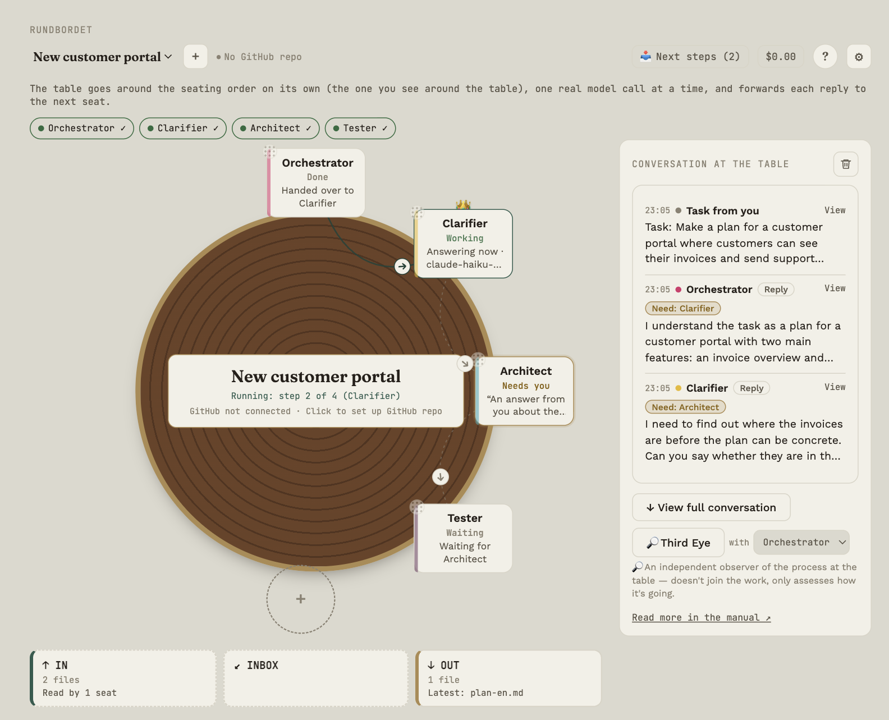
Watch a recorded demo first
At the top of the first screen there is Watch the recorded demo. It opens a window of its own with a ready practice table (a plan for a small café) where you can click around, watch the seats work in turn, try the Third Eye's choices and see the Shield work. The replies are written in advance and do not come from a model. No key is used, it costs nothing, your own text is not used, and the demo never touches your own tables. Nothing in the demo is saved when you close the window.
The first time: pick a task
The first time you open Rundbordet, the app asks: What would you like help with? You can write your own task in the field at the top (see the next section) or pick an example. There are four examples: Understand something difficult, Choose between two options, Is this true? and Understand a letter I have received. Pick one, and you see the task, an example of what an answer can look like, and which models the table will use. The example was written in advance; it is not an answer from a model, and your own answer will differ.
- Paste your OpenRouter key (there is a link to get one), and press Check the key and show the models. Under the field it says that a ChatGPT or Claude subscription does not in itself give an API key, that you pay the provider directly, where the key is stored and who receives the task. Checking the key sends no task.
- Look at the models and the list prices, and press Create the table.
- The task is now in the message box. Nothing has been sent to any model yet. Edit the task if you like, and press Send to the table when you are ready.
The cost limit for a run is set to 1 USD, so the run stops when the limit is reached. You can change it in the table's settings. The letter task is an explanation in plain language and not legal advice. The example letter is invented; replace it with your own, or put a PDF in IN.
If you would rather start yourself, press Start with an empty table and follow the steps below. You can always open the tasks again by pressing + next to the table selector.
A different task? Get a suggestion
If none of the four examples fits, write the task in your own words in the field at the top (or paste the text you want help with) and press Get a suggestion for my task. Then answer three short questions: how much you want to take part yourself along the way, whether you have used AI tools where several seats work together before, and how important it is that the answer is right. The app then suggests three things, each with a short reason:
- How it goes: in plain words, what the table does (the table type's own description), how many seats are called, and what you get out of it. There are no more seats or calls than the table type requires.
- Table: one of the table types (Learning, Decision, Facts, Letter, two seats for building, Scrum), chosen from the words in your task. If the app cannot see a particular type, it suggests Learning, because then you think first, and says that this is a starting point.
- Thinking: Quick, Thorough or Critical, based on how important it is that the answer is right. The preset is laid on top of the table's own setup and never turns off anything the table has turned on. These are wishes to the model, not a guarantee.
You can change all three before anything is created; it then says You chose this yourself. The suggestion is made by fixed rules in the app, and nothing is sent anywhere in that part.
If you want the Third Eye to read the task and adjust the table and thinking, press Let the Third Eye read the task (after you have checked the key and seen the models). You first see exactly what is sent (your task and a short list of the table types; your answers to the three questions are not sent), which model is used, and an estimate of the price. Only when you press Send is one request made. The answer is accepted only if it is one of the known choices; otherwise nothing changes. The request is included in the table's bill as the Third Eye's expense. The Third Eye never touches the view.
What you need
- An API key from at least one provider (Anthropic, OpenAI, Google Gemini, Groq, Mistral, xAI, DeepSeek or an OpenAI-compatible service). You get the key from the provider; the seat panel has a Get key link.
- A few dollars on the provider account. Small models typically cost well under a cent per reply.
- Mac, Windows or Linux. If your Mac will not open the app, or you need Linux (e.g. Omarchy), see Install on Linux and Troubleshooting.
How to do it
- Add a seat. Click the dashed circle with + at the table. Press + New seat and give the seat a name; to pick a ready-made concept (for example Orchestrator), open the group Ready-made concepts.
- Choose an API model profile and a model. If you have no profile yet, set one up with provider and key (the button is in the seat panel). Then choose the model on the seat (type the name or click Fetch models).
- Test. Click Test API. If you are told the connection works, key and model are fine.
- Save. The seat takes its place at the table.
- Add one more seat, such as Clarifier or Builder. Seats may use different providers.
- Give the table a task. At the bottom is the recipient choice To. Leave it on Everyone (start run), type a task such as "Draft a plan for a customer portal", and click Send.
- Confirm. The table shows the task, the order and the spend so far. Click ▶ Start the table.
- Read. The first seat answers, the answer is passed on to the next seat, and so on. You follow along in Conversation at the table.
What happens next?
Every seat ends its reply with a small need: what is still missing, and which role could best handle it. The table collects them in the Next steps button, together with observations and suggestions from the Third Eye. Read more in Open needs and suggestions.
How much do you want to take part?
The table can run to the end, or you can take part along the way: seats can pause at questions for you, and you can write your own take before the table runs. Under ⚙ → This table → Table file → Templates there are ready-made tables (Fact table, Pair, Scrum, Learning table, Decision table and Letter table), each with a tag: You take part: a little / along the way / all the way. Read more in Take part along the way.
The table and the seats
How the table is built and what you can do with a seat.
The table has up to eight places. Each place is a seat with a role, a model and a set of settings.
How to read a seat
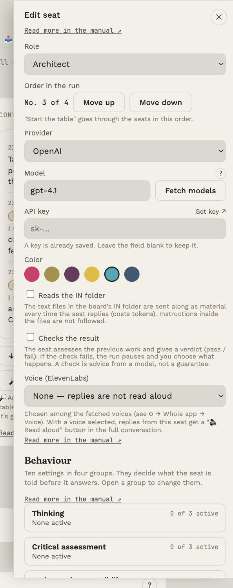
On the seat itself you see:
- The role name, a status word and one activity line. The status word is what the app can document: Working (a model call is running), Has the turn, Next in line, Waiting, Done, Check failed, Needs you, Waiting for you (the table is paused and waiting for your answer), Paused or Failed. The line below says what happened or is awaited, for example Answering now · model name, Waiting for Clarifier or Handed over to Builder. Nothing is shown that the app does not know.
- Details on hover: hold the mouse over (or tab to) the seat for model, provider, mandate, way of working, active settings, whether it is a checking seat and whether it reads IN. The small icons for changing mandate and way of working appear the same way (see Behaviour and icons).
- A small dot in the corner shows that the seat's API key has been tested: green means the test worked.
- A crown 👑 if the seat has the turn (see Whose turn it is).
What you can do
| Action | How |
|---|---|
| Add a seat | Click the dashed circle with + |
| Edit a seat | Click the seat |
| Move a seat | Drag the small dotted corner handle; double-click to reset the position |
| Change project name and GitHub | Click the name in the middle of the table |
| Delete a seat | Open the seat and click Delete seat |
| Switch table | Use the drop-down at the top left; the + next to the drop-down offers task cards, your own task, Quick start or an empty table |
Three views of the table, same data
Above the table you choose how it is shown:
- Round: the seats sit around a round table. Here you can drag seats freely and see all symbols on hover.
- Compact: a smaller round table with small seats (name and a small sign: ● working, ! need, … waiting). The seats stay in the fixed places.
- List: the seats stand under each other in the table's order, with number, status and model. It suits narrow windows.
- Auto chooses by the width of the table column: round from about 480 px, compact from about 340 px, otherwise list. It only switches once the width is well past the limit, so it does not flicker.
Your choice is remembered on this computer. On Auto the view can change when you resize the window; if you pick a specific view, it stays. The seats' data, clicks and settings are the same in all three.
Handoffs between seats
When a seat passes its reply to the next (in a run or when you forward it yourself), it is shown:
Round and compact table: a thin connection between the seats with a small arrow in the middle that shows the way the information is sent (from → to); hold the mouse over it to see who hands over to whom. Dashed means the handoff has not happened yet; a solid line means it was completed in the latest task; a hollow arrow with short dashes means the next seat came after but no handoff is logged (for example because the reply had no 🔭 block); a dot-dash line is a shortcut outside the order: either a manual forward or a handoff that went somewhere other than the order says (for example when the next seat is chosen dynamically). Otherwise only arrows in the planned order are drawn, so a seat does not seem to have two planned arrows; the shortcut is labelled with the names (hold the mouse over it). At the bottom left of the table a small legend explains the lines. The arrow sits close to the receiver, so it does not end up on top of the middle of the table. When a handoff happens, a small dot travels along the line (at most one at a time, because the table works in sequence; with reduced motion nothing moves).
List: a small arrow between the rows (tooltip: "Handed over to Builder") and, once the handoff has happened, how it was sent ("full text" or "structured").
Summary: click the arrow or the connection, or the handoff line under a reply in the full conversation. If the handoff is structured, you see facts, decisions, open questions, warnings and expected output. If it is full text, it says clearly that the whole reply was sent without fields, and why (the table's setting, the reply had no structured fields, or the receiver is a checking seat, which always gets the whole text). You also see how many characters were sent.
Questions for you: if a seat has a question for you, the arrow out of it gets a mark (yellow number, red or green ✓), and a click shows the question and an answer field. See Take part along the way.
It builds on data the app already has; no extra model calls are made.
The seat panel
- Role (concept) and role name: pick a concept from the list. Role name is right below and is empty by default; if you type a name, it is used instead of the concept everywhere on the table (see Roles).
- API model profile: pick the profile that has provider and key. You set a profile up once under ⚙ → Whole app → API model profiles … (the button is also in the seat panel). The key is never written on the seat.
- Model: choose the model on the seat; Fetch models gets the current list straight from the provider with the profile's key.
- Test API: sends a small test call so you can see whether key and model work.
- Colour: for overview only.
- Reads the IN folder: gives the seat access to your material (see IN and OUT).
- Checks the result: makes the seat a checking seat (see Checks and send-back).
- Voice (ElevenLabs): pick a voice so the seat's replies can be read aloud (see Voice).
- Instructions (advanced): the seat's ten behaviour settings (see Behaviour and icons).
Table file: save, share and import
Under ⚙ → This table → Table file you can save the table's setup as a file: roles, model and provider, dials, icons, add-ons, additions, checking seats, handoff mode, rounds, own take first and cost limit. The file never contains keys, addresses, voices, messages, memory or Protection's words, so it can be put in git or passed on.
- Export table file saves a
.bord.jsonfile wherever you choose. - Write roles and setup as a document to OUT makes a readable Markdown file about each seat: model, mandate, active dials, additions, the latest changes and the full instruction the model receives. It sits in OUT, and editing it does not change the table.
- Import table file always creates a new table; your existing table is untouched.
A seat's role name and concept (for example OUT Writer) are stored separately in the file, so a renamed seat keeps its function, also after import. Older files without a concept work as before.
The app checks the file against a fixed list (known providers, dials, states and icons), shortens texts and skips anything invalid with a warning. At most 12 seats and 20 additions per seat.
Templates: ready-made tables by how much you take part
Under ⚙ → This table → Table file there are Templates. Each template has a tag saying how much you take part. Not every task needs you all the way: a plain look-up of facts gains nothing from pauses, while a choice or a learning task gains a lot from them. You see all the instructions in the preview before anything is created.
| Template | You take part | What it is for |
|---|---|---|
| Fact table | a little | Researcher gathers knowledge with sources, Reviewer (a checking seat) checks sources and uncertainty, and OUT Writer writes the result as a file. At most two rounds, no pauses |
| Pair | a little | Driver does the work, Navigator reviews it (see Checking results) |
| Scrum | along the way | Sprint planning, see below |
| Learning table | all the way | You think first. Clarifier (⏸) asks for your own take, Explainer (⏸) gives perspectives and says what is uncertain, Challenger (?) asks questions about your assumptions, and Writer helps you word your own conclusion |
| Decision table | all the way | Clarifier, Analyst (pros and cons), Affected (the perspective of those affected), Challenger (⏸) and OUT Writer, who writes a decision note with your decision and the open questions |
The Learning table and the Decision table also have Own take first switched on (see Take part along the way): you write your own take before the table runs, and see it next to the result afterwards. The mandates (✓ ? ⏸) in the Learning table and the Decision table work because new tables have The mandate steers the run switched on (see Take part along the way). In the Decision table the pause sits right before OUT Writer, so your decision can be written in the pause card. Your decisions and the open questions also go along in the decision register (see Take part along the way), so the note can address them.
None of the templates decides anything for you. You can always change seats, mandates and instructions afterwards.
Scrum
Scrum: sprint planning creates a table with five seats: Product Owner (reads the vision in IN and prioritises), Scrum Master (facilitates and watches goal and capacity), Developer (estimates in points), Tester (a checking seat that checks acceptance criteria) and OUT Writer (writes the plan as a file). You see all instructions in the preview before the table is created, and the seats get a provider and a key afterwards (Reuse my keys can borrow your own).
Put the project's vision and backlog in IN, write the task (e.g. Plan the next sprint) and start the table. The seats work one step at a time, and you are part of it: the table does not agree anything without you.
Roles
The role is the seat's name and starting point; you steer the behaviour yourself.
When you pick a role, the seat gets that name as its identity ("You are Clarifier."). The role is not a ready-written personality; how the seat works is decided by the settings under Behaviour and icons. Pick the role by what you want to use the seat for.
Concept and role name
The role in the list is the seat's concept. Role name is right below it and is empty by default; if you type a name there, it is used instead of the concept everywhere on the table (in the conversation, on the seat and in the recipient list). The concept still applies: a seat with the concept OUT Writer delivers to OUT, whatever it is called. Your own roles can be saved under ⚙ → Whole app → Your roles (see Settings).
When you add a seat you press + New seat and give the seat a name; the ready-made concepts are in the collapsed group Ready-made concepts, and on the seat itself in the group Choose a concept; if the seat should save its answer as a file in OUT, tick Writes to OUT first. So you just give a new seat a name, and an existing seat keeps its concept. If you change the concept in Advanced, it appears in the seat's history (Concept: Builder → Reviewer) and you can roll it back.
Starting settings for roles
A concept is otherwise just a name, but each concept can get starting settings: how thorough and critical the seat is (dials), own instructions, whether it is a checking seat, and whether it reads the IN folder. The app has suggestions for the most important roles (Orchestrator, Clarifier, Researcher, Builder, Tester, Reviewer, Documenter and OUT Writer).
- When you give a seat a concept (a new seat, or a new concept on an existing one), the app first shows a consequence review: exactly which settings change, and a warning if it can mean more or larger calls (checking seat or reading IN). You choose Use the role's settings, Keep the seat's settings or Undo the role choice. Nothing is saved until you save the seat, and the change appears in the seat's history.
- Let the Third Eye suggest: in the consequence review you can ask the Third Eye for its own suggestion for the role's settings and instructions. The app first shows exactly what is sent (only the role's name and the seat's own instructions) and an estimate of the size, and sends nothing until you press Send to the Third Eye. The suggestion is shown as changes, before and after, and you can go back to the app's own suggestion. The call is booked on the table.
- Independence, rules and cost are never set by a role; they are your own choices.
- Edit them under ⚙ → Whole app → Starting settings for roles: choose a concept, edit and save. Restore the suggestion removes your edits.
The roles
| Group | Roles |
|---|---|
| Core and steering roles | Orchestrator (keeps the overview and distributes work), Router (points to who should take the next step), PM (Product), Communicator |
| Analysis and planning | Clarifier (asks clarifying questions), Researcher, Architect, Planner |
| Development and implementation | Builder, Database, Frontend, Backend, DevOps |
| Quality assurance | Tester, Security, Reviewer, Evaluator |
| Knowledge, learning and improvement | Documenter, Memory, Process Analyst, Learning Agent |
| Specialised roles | UX Researcher, API Specialist, Performance, Compliance, Human |
| Delivery | OUT Writer: writes the table's result as a file in the OUT folder (see IN and OUT) |
Your own role
Choose Other (type your own) in the list and give the role a name, for example Debugger or Editor. The name is used as the seat's identity.
The templates also use their own role names (for example Driver, Navigator, Explainer, Challenger, Writer, Affected). They are roles you could have typed under Other yourself, with a ready-made instruction (see The table and the seats).
A good mix
Start small: one seat to clarify, one to build and one to check. More seats mean more calls and therefore a higher bill, but not necessarily better results. See cost and usage under Metrics and Prices and usage.
Choosing a model
You pick an API model profile in the seat panel; it has provider and key, and you choose the model on the seat yourself (see Settings).
Type the first letters in the Model field and every model that fits is shown. Pick with ↑ ↓ and Enter, or click. You can also type a model name that is not on the list.
Fetch models gets the current list straight from the provider (needs the key); the suggestions shown beforehand may be out of date. At OpenRouter models are named provider/model, e.g. openai/gpt-4.1; type anthropic/ to see only that provider's models.
Whose turn it is
The crown shows which seat is up.
At the table one seat at a time can have the turn. It is marked with a crown 👑. The turn is a visible marker; it helps you and the table keep track of who is "next".
The turn moves by itself
- When you start the table, the turn follows along from seat to seat.
- If you send a message directly to a seat, or forward an answer, the recipient gets the turn.
Give the turn manually
Below the table is a line like "👑 Clarifier has the turn — click to see why". Click it to open the Whose turn is it panel:
- Pick a seat and optionally write a reason.
- Click Give the turn, or No one has the turn to remove the crown.
The reason is saved so you can see later why the turn was given.
Start the table
Let the seats work in turn on the same task, and keep an eye on the spend.
A run is when the table goes around the seats in the order you see them, passing on the task and each answer.
How to start
- Leave To on Everyone (start run).
- Type the task in the field (it grows with the text) and click Send to the table (or press ⌘+Enter / Ctrl+Enter).
- The table shows a confirmation: the task, the seats in order, the spend so far and, if seats read the IN folder, how many files and roughly how many tokens that costs per call.
- Click ▶ Start the table. Or Adjust if you want to change something first; your text stays put.
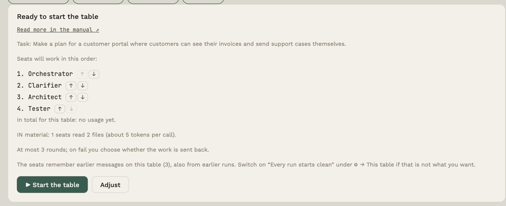
During the run
- One seat answers at a time, with a real model call. Status words and progress show at the table.
- Every seat gets the original task along with the previous answer as a handoff, so the task does not get lost along the way (see Metrics and handoff).
- Before the table starts, it checks that every seat has an API model profile and a model; otherwise it does not start, and the app tells you what is missing. If a seat does not answer, the table moves on and writes a note.
- If a seat hits a temporary error (too many requests, an overloaded provider, timeout, network), the table tries again up to two times with a short pause. An invalid key or a wrong model name is not retried, and the seat is skipped.
- If a seat is a checking seat and the check fails, the run pauses and you choose (see Checks and send-back).
- Click ■ Stop to interrupt. Answers already received are kept.
The result: find, copy, save and reuse
When a run is finished, Result opens by itself (and can always be opened with the Result button next to the message field). The card puts together what already exists, with no new call to any model and nothing made up:
- Conclusion: the table's latest reply, verbatim, with the name of the seat.
- Your decisions: the questions you have answered or skipped.
- Open questions: the questions for you that are not settled yet.
Parts that do not exist are left out. Press Copy to put the result on the clipboard, or Save as file for a Markdown file. The conversation and the individual replies are still in the conversation if you want to see how the reply came about.
Use the table again gives you the same approach, new material. The app first explains what comes along (the seats, their settings and instructions, the arrows and the table's settings, also the Shield's words and rules) and what does not (the conversation, your decisions and open questions, memory, measurements, GitHub access and the files in IN). Only when you confirm is a new, clean table created. Nothing is sent until you press Send yourself, and the old table and its result stay as they are.
Do you want to take part along the way?
The table can pause at a seat's question for you, show open questions on the arrows, collect your decisions in a decision register and let you write your own take first. All of it is in Take part along the way.
Does every run start clean?
Under ⚙ → This table you can switch on Every run starts clean. Then a seat sees only the current task's own messages when the table runs, and does not remember earlier runs on the table. That keeps an earlier run (for example another attempt on the same table) from colouring the next. New tables have it on; existing tables are unchanged (the seats remember their whole conversation). The start confirmation says which applies. When you write directly to one seat, the whole conversation still applies.
Cost limit
In the project panel (click the name in the middle of the table) you can set a cost limit per run. Once the run has spent that amount, the table stops before the next seat is called and writes a note. The last reply may exceed the limit a little. Only calls with a known price count (see Prices and usage). Empty = no limit. The limit is list price, not the provider's invoice, it is only checked between seats, and a single call can go over it.
Before starting, the confirmation shows an estimated spend from the seats' latest calls. It is an estimate: if a seat has not answered before it cannot be estimated, and the confirmation says so instead of guessing; a model with no list price is named, because its calls cannot be counted. The price depends on the model, the material and the number of calls, and more seats and repeats can raise it. The confirmation also shows which provider receives the task.
Just one seat
Pick the seat's name under To and send. Then only that seat answers, and it gets the turn.
Take part along the way
Pause at questions, the decision register and your own take: how to take part, instead of only waiting for the result.
A table can run to the end without you, or you can take part along the way. How much is up to you: per seat (the mandate), per table (the settings under ⚙ → This table) and per run (whether you write your own take). Not every task needs you. A plain look-up of facts can run without pauses; a choice or a learning task gains from them.
| Feature | What it does | Where you control it |
|---|---|---|
| Mandate as a stop | The table pauses after a seat and shows you its question | The mandate icon on the seat + The mandate steers the run |
| The arrow shows what is open | Open questions appear on the arrow between seats, and you can answer there | Always, where a seat has a question for you |
| Decision register and closing check | Your decisions go along to the later seats; after the run, the open questions are counted | Always |
| Pause and handoff per arrow | Pause before a particular seat, or only the task and your decisions | The arrow panel, This arrow |
| Disagreements | Two replies side by side, and a model that points at the differences | Overview → Disagreements |
| Look-back | A calendar file that reminds you to look back at a decision | Overview → Look-back |
| The envelope | You see and can edit the text the next seat gets, before it is called | See and edit the envelope |
| Own take first | You write your take before the table runs, and see it next to the result | Own take first |
The ready-made tables under Templates are set up by how much you take part (see The table and the seats). How much you actually took part you can see as numbers under ⚙ → This table → Metrics → Your participation (see Metrics and handoff).
Overview: one place for what needs you
At the top of the bar is Overview. Under the button, five things are gathered: Next steps, Look-back, Disagreements, Cost and prices and I'm stuck. Each row opens what the earlier button opened.
I'm stuck also stays as a button of its own in the top bar so the safety net is always one click away.
The number on the button is only what the app knows needs you: things only you can decide, and a run that is waiting for you. With no number, nothing needs you right now. The menu closes when you pick something, press Escape or click outside it.
Mandate as a stop: run to the end, or take part along the way
The mandate icon on each seat controls whether the table pauses after the seat. It applies when The mandate steers the run is switched on under ⚙ → This table (new tables have it on; existing tables are unchanged):
| Icon | What happens |
|---|---|
| ✓ | The table runs on without you. Questions are not picked up here |
| ? | The table stops when the seat has a question only you can decide |
| ⏸ | The table always stops after the seat, so you see the result yourself |
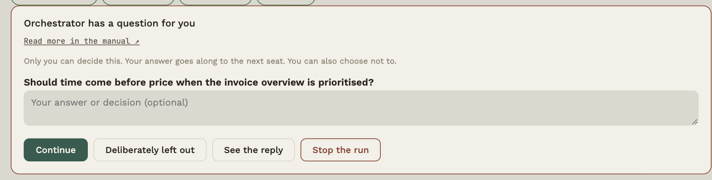
A question for you is the seat's 🔭 Need when it begins with JUDGEMENT: (values, priorities, consequences), or when it does not point to a seat at the table. If it begins with FACT: (something a seat or a file can answer), the table does not stop. A need that is "none" is no question.
At a pause you can:
- write your answer (or, with ⏸, a comment to the next seat) and press Continue. The answer and the question go into the decision register and go along to the later seats (see below). A comment (without a question) goes only to the next seat;
- press Deliberately left out: the next seat is told that you chose not to answer, and that it must not assume an answer;
- see the seat's reply (See the reply: the reply opens in the pause itself, and the pause gets a frame until you have answered or press Hide the answer) or Stop the run.
Checking seats do not stop from here; they have their own decision (see Checking results). After the last seat there is no pause. The activity stream and the events only show that there was a pause and how many questions were answered or left out, never your answers.
The arrow shows what is open
When a seat has a question for you in its reply (a need that begins with JUDGEMENT:), the arrow out of that seat gets a small mark: a number of open questions (yellow), or red when the table is paused and waiting for you. When the question is settled, there is a green ✓. Press the arrow to see them:
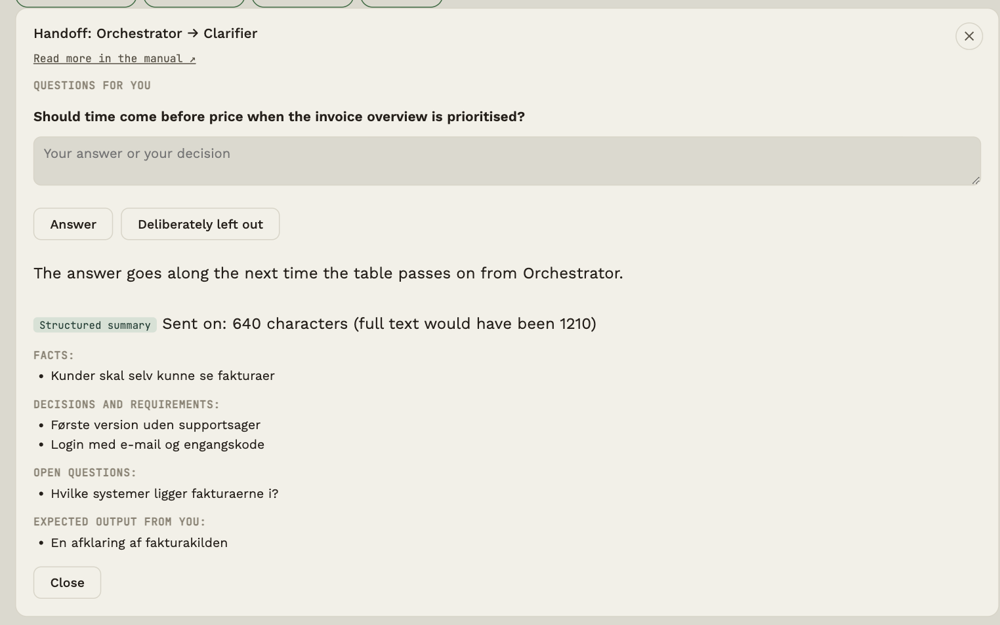
- Answer saves your answer. Deliberately left out saves that you chose not to answer. An empty answer does not count.
- The answer goes into the decision register (see below).
- A settled question no longer counts in Next steps.
- If the table is paused, you answer in the pause card; the arrow shows the same and has a button to it.
- The events (
question.answered,question.skipped) only say that you answered, never what.
The questions sit on the first arrow out of each seat. The last seat has no arrow out, so its question only appears in Next steps.
The decision register and the closing check
All your decisions in a task (answers and Deliberately left out, on the arrow or in the pause card) are collected in a decision register. It goes along in every handoff to the later seats, in runs and with Forward: the seats get your answers, are told what you deliberately left, and see which questions are still open. They are told not to invent answers and not to decide the open ones themselves. OUT Writer must address every item: the decided ones with your answer, the open ones in an Open questions section.
After a completed run, the closing check (rules, no model) points out how many questions for you are still open, and which. It appears in the activity stream and in the events (run.closingcheck, numbers only). The check does not verify that an OUT file actually mentions a question; that is the seat's job, and you should read the file.
The register covers the latest task. Decisions from earlier tasks are not included.
Pause and handoff per arrow
Press an arrow between two seats. Under This arrow you can change two things for exactly that transition:
- Stop here: you read before [next seat] starts (the arrow's pause): the table always stops when the previous seat is done and shows Pause before … with the reply, any questions and a field for a comment to the next seat. The pause is added on top of the seat's mandate: if the mandate stops, or the arrow has a pause, the table stops. It also applies when The mandate steers the run is switched off. The arrow gets a small ⏸. The difference between the arrow's pause and the mandate ⏸: the arrow's pause sits on one particular arrow and works in fixed order; the mandate ⏸ sits on the seat (also when the next seat is chosen dynamically) but only works when The mandate steers the run is switched on. Both give the same stop and the same pause card.
- Handoff to this seat: As the table (default), Full text, Structured or Only the task and your decisions. With the last one the seat does not see the previous reply, only the task and the decision register. It is a way to get an independent take that does not build on what came before. A checking seat always gets the full text.
It applies from the next handoff, in a run and with Forward, and the event edge.configured only keeps the choice. The pause applies in fixed order; if you choose the next seat yourself (⚙ → This table → Who goes next?), you already have a decision at every transition. The per-arrow settings are saved with the table, but not in the table file, because they depend on the table's seats.
Disagreements between two replies
⚖ Disagreements (under Overview) puts two replies side by side, preferably from two different models. Disagreement is where you need to think for yourself, and it is rarely what you notice when the replies stand on their own.
- By default the app picks the two latest replies from different models in the latest task. You can pick others. If the two replies come from the same model, a note says that disagreements say less then.
- Press Find disagreements, and a model points at the differences: what they agree on, what they disagree on (with what A and B each say), and what is unclear. You choose which seat lends compute, preferably a model that is neither A nor B. It costs one call, and both replies are only sent when you press (through Protection, if it is switched on).
- The answer is the model's assessment and can be wrong. If the app cannot read it, it is shown as it is. Always read the two replies yourself.
- For each disagreement you can write your decision and save it in the decision register, so it goes along to the later seats.
- The events (
diff.opened,diff.analysed) only have counts, never text, and Metrics counts the comparisons.
There is no measurement that letting different models check each other helps. Models can make the same mistakes, and a model assessing two models is still a model.
A look-back in your calendar
🗓 Look-back (under Overview) makes a calendar file (.ics) that reminds you to look back at a decision in a week, two weeks or a month.
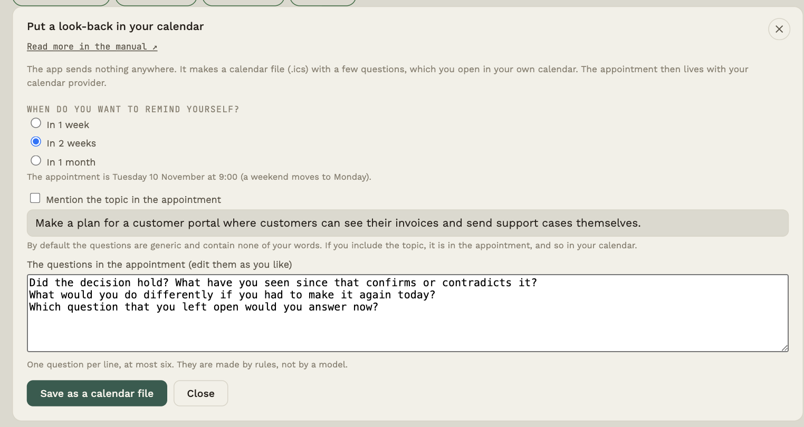
- The app sends nothing. It saves a file, and you open it in your own calendar. The appointment then lives with your calendar provider.
- The questions are 2-3 and made by rules, not by a model, for example Did the decision hold? What would you do differently? Which question you left open would you answer now? If you wrote your own take, it also asks how it stood up against the table's. You can edit them as you like.
- By default the appointment contains none of your words. If you want the topic included (your latest settled question, or the task), you tick it yourself. Then it is in the appointment, and so in your calendar.
- Park your open questions: tick Include my open questions, and the questions you have not answered yet are in the appointment's description, so you do not forget them. With Include my decisions, your decisions (the question and your answer) come along too. Both are off by default, because the text would otherwise be in your calendar. You see, and can edit, exactly what goes along before anything is saved.
- The appointment is at 9:00 local time. If the day falls on a weekend, it moves to Monday. The calendar reminds you at the start; the app does not.
- The event
reflection.scheduledonly keeps the choices (when, number of questions, whether the topic is included), never the text, and Metrics counts how many calendar files you made.
It is an idea, not a measured method: there is no evidence that a look-back helps. It only costs the time you set aside.
See and edit the envelope before it is sent
If you switch on See and edit the envelope before it is sent under ⚙ → This table, the table stops right before a seat is called and shows exactly the text the seat gets: the task, the previous reply, the decision register and your notes. It applies both to a run and to Forward. The arrow between the two seats gets a red ✉, and a click on the arrow leads to the envelope.
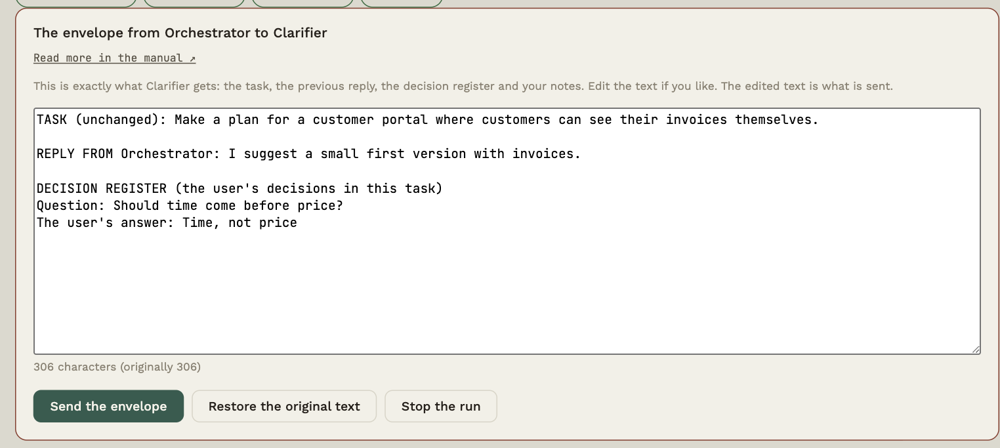
- Edit the text if you like: remove something that should not go along, or add a line. The counter shows the number of characters and whether the text has been edited, and Restore the original text puts it back.
- Send the envelope sends the text you see, and the edited text is saved in the conversation (marked as edited), so it shows what the seat actually got.
- Stop the run (or Cancel sending with Forward) sends nothing. The seat is not called, and the handoff is not logged, because it did not happen.
- The task to the first seat is not shown as an envelope; you wrote that yourself.
- The events (
envelope.opened,envelope.sent,envelope.edited,envelope.cancelled) only have the number of characters and whether you edited, never the text.
It costs a click per handoff, so it is off by default. It fits when you want to control what a seat is told, for example with confidential information or to remove noise. An edit applies only to that one envelope; it does not follow along to the next ones.
Your own take first
If you switch on Own take first under ⚙ → This table, the start confirmation gets a field: Your own take first (optional). Write what you yourself think the answer or the solution is, and why, before the table runs. The Learning table and the Decision table have it switched on.
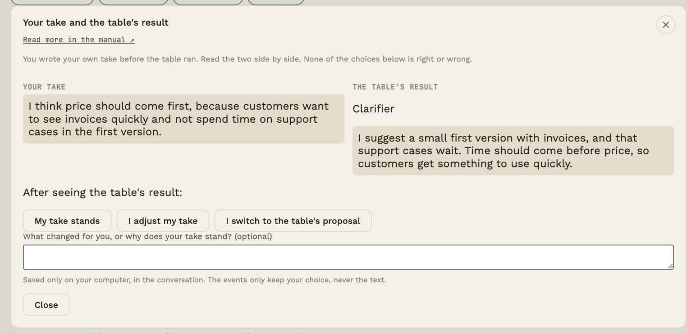
- The seats do not see your take. It is sent to no seat, so the table's result is an independent take you can compare with. (If you want a seat to use it, write it in the task or in an answer in the pause card.)
- The take is in the conversation as a message from you, and the events only say that you wrote one (and how long it was), never what it said.
- When the run is done, your take and the table's result are shown side by side. You can choose My take stands, I adjust my take or I switch to the table's proposal, and write an optional explanation. None of the choices is right. The choice and the explanation are saved on your computer, in the conversation; the event only keeps the choice.
- If you leave the field empty, you skip it deliberately. Then no comparison is shown.
The point is that you think before you see the table's answer, so you do not just take the first thing that appears. It costs you a little time each run, which is why it is optional per table and per run.
Checks and send-back
Let a seat assess the result, and decide yourself what happens when it fails.
A checking seat reads the previous work, compares it with the original task and gives a verdict: passed or failed. If it fails, the run pauses and you choose what happens. Nothing happens by itself.
Set a seat to check
- Open the seat (typically a Tester, Reviewer or Evaluator).
- Tick Checks the result and save.
- Place the seat after the seat that does the work.
The seat gets the full text from the previous seat (not just the handoff), so it can assess the result itself. It ends its reply with a verdict, which you see under the reply in the conversation: 🧪 Check: passed or failed.
When the check fails
The run pauses and you get three choices:
| Choice | What happens |
|---|---|
| Send back to [seat] | The seat gets the check note and the original task and fixes its reply. The run then continues and the check assesses again. The target is the role the check itself recommended, if it sits earlier in the order, otherwise the nearest earlier seat |
| Continue anyway | The run continues despite the verdict. The override is logged |
| Stop the run | The run ends with a note |
A run can be sent back at most two times (three rounds). After that only continue or stop remain, so no run can go in circles. The limit can be changed, see Rounds below.
An unclear verdict (the reply has no line with PASS or FAIL) never counts as passed. It is treated as failed.
Rounds and pairs
A round is one pass: the seat does the work, the check judges it. The first pass is round 1, and every sending back gives a new one. Under ⚙ → This table (when the table has a checking seat) you set the maximum number of rounds (1 to 10; 1 means no sending back, the default is 3) and can tick Send back by itself when the check fails.
With the tick, the check sends a clear FAIL back by itself until the limit is reached. Then you choose, as described above. An unclear verdict is never sent back by itself. Every automatic sending back appears in the activity stream with its reason, the status line shows round 2 of 3, and you can always stop.
The template Pair: maker and reviewer (under ⚙ → This table → Table file → Templates) is set up like this: the Driver does the work, the Navigator reviews it against the task and says PASS or FAIL, and they take up to three rounds. You see all instructions in the preview before the table is created. How well a pair works has not been measured; compare cost and result with a single seat yourself.
Require proof for PASS (optional)
A check can write PASS without having read carefully. Turn on Require proof for PASS under ⚙ → This table (shown when the table has a checking seat), and the checking seat is asked to quote what it saw before it says PASS:
🔎 EVIDENCE: "word-for-word piece of the reply the check received"
🧪 CHECK: PASS
The app looks up every quote itself in the text the check was given to assess (upper/lower case, spacing, quotation marks and markdown do not matter; "…" may stand for omitted text). A PASS only counts as passed if there is at least one quote, all quotes are found word for word, and each is at least 12 characters in one piece. Otherwise you see PASS without proof: the run pauses, the gate before OUT closes, and you choose as with a failed check. A PASS without proof is never sent back automatically, not even with automatic send-back, because it cannot know what is missing. A FAIL needs no proof.
Gate before OUT
If the latest check in a task has failed, nothing is saved to OUT, neither by OUT Writer nor with ↓ Save to OUT. Instead a note appears with the button Save anyway. That is a deliberate override, and it is logged.
Metrics
Metrics shows the number of passed, failed and unclear checks, send-backs, overrides and retries after temporary errors. The log never stores the text of the reason.
Activity stream and full conversation
Two ways to read what is happening at the table.
On the right (or below the table in a narrow window) is Conversation at the table. It can be shown in two ways; switch with the button at the top of the panel.
Activity stream (default)
A short list of what happens, with more room than before. Each event has a time, who, and small labels: what kind of event it is (Task, Reply, Forwarded, Third Eye, Saved to OUT …), the result of a check (Passed or Failed), and whether something needs you (Need: Tester or Asking you). The text can take up to three lines. Click View to jump to the message in the full conversation.
System notes from the table appear here too: a pause, Closing check (open questions after a run), Your own take and your choice afterwards (see Take part along the way).
Full conversation
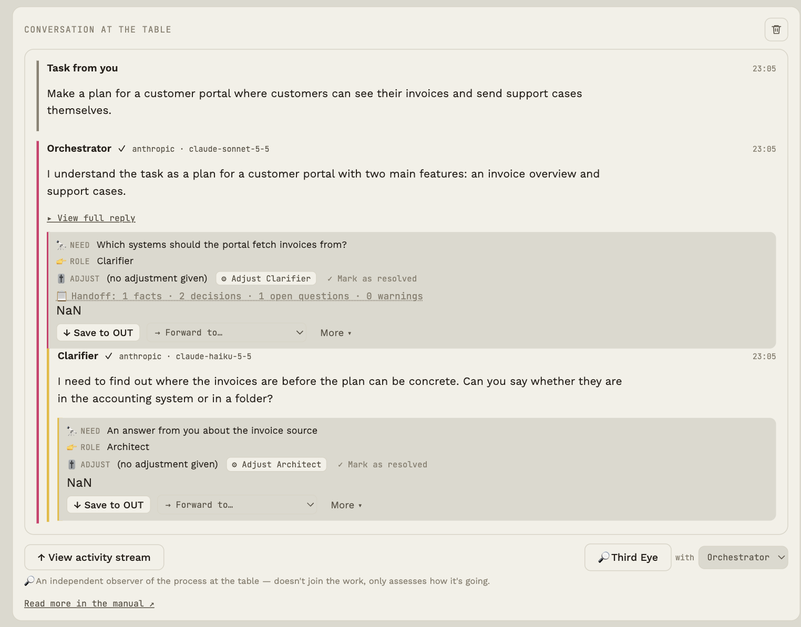
The full conversation gets the full width below the table. Here you see each reply with:
- The first sentence as a summary of how the seat understood the task. Click ▸ Show the whole reply for the rest.
- The need box 🔭👉🎚 with the seat's suggestion for the next step (see Open needs and proposals).
- A handoff line 📋 if the seat handed over facts, decisions and so on (see Metrics and handoff).
- Actions under the reply. The two most important are in front, the rest are under More ▾:
| Button | What it does |
|---|---|
| ↓ Save to OUT | In front. Saves the reply as a file in the table's OUT folder. Once the reply is saved, the button changes to ✓ Open in OUT (opens the OUT folder), and under More you can save another copy |
| → Forward to… | In front. Sends the reply to another seat; the recommended one is marked |
| 💡 To instruction | Under More. Turns the selected part of the reply (otherwise a draft from the reply) into a permanent instruction for a seat, after you have seen and edited the text |
| 💾 Save to git | Under More. Writes the reply to a file in your GitHub repo (only if repo and token are set) |
| Remember | Under More. Saves the reply's decisions in the table's memory |
| 🔊 Read aloud | Under More. The voice says a short brief about the reply (only if the seat has a voice) |
Nothing is saved to git until you click Save to git yourself.
Replies where the seat asks you a question get the label ❓ Asking you.
While an answer is on its way
When the table has sent a request to a model and the first word has not arrived yet, the seat's bubble shows a calm waiting layer: soft colours in the seat's colour with one word in the middle. The word is the seat's role (Building, Reviewing, Writing …), or Checking if the seat checks the result; a seat with its own name and no concept says Answering. The word never changes by itself: it only shows what the table knows. The layer disappears when the first word arrives, and it never shows while the ball is with you (for example when Protection waits for your choice).
Under ⚙ → Whole app → Waiting layer (under More appearance options) you can choose the look: Colour wash (default), Pixel mosaic, Pixel swarm, Particles (3D) or Word only. If your system has reduce motion on, the layer stands still.
Export the conversation
Under ⚙ → This table → Export conversation you save the whole conversation as one Markdown file, for example for documentation or an assignment. The file contains:
- Setup: each seat's model, mandate, dials, additions and the full instruction the model actually gets.
- The conversation with a time on every message, and who wrote it: Task from you, a seat (with provider and model), Forwarded to …, Sent back to …, system and Third Eye.
- Events from the table's log (runs, calls, needs, checks, choices) with times and without message text.
- Your interventions, a draft situation log: what you did yourself (gave the task, started and stopped the run, wrote to a seat, chose the next one, sent back, adjusted), with columns for T/U/O and Why that you fill in yourself. What the seats or the autopilot did by themselves is not listed.
The file never contains API keys, addresses or voices. If Protection is on, the text is as stored, with placeholders instead of the hidden details. The times are your computer's local time.
Clear the conversation
The trash icon at the top right of the conversation panel deletes the conversation's messages for the active table. The first click turns it red and shows Clear?; click again within three seconds to delete. It cannot be undone. Seats and settings stay.
Memory
Decisions and facts the table remembers across tasks.
By default a seat only remembers its own conversation. Memory is a list of items you want the table to remember: a decision, a budget, a target group. The items are put into every seat's instruction each time it answers, with a note to follow them unless the task explicitly says otherwise.
How to use it
- From an answer: if the answer delivered decisions (the ✔ line in the handoff), it gets a 🧠 Remember button in the full conversation. It saves the decisions. Duplicates are skipped.
- Manually: open ⚙ → This table and choose Memory. Write an item and click Add.
- Edit and delete: the items can be edited directly in the panel and deleted.
At most 30 items of 300 characters each. The panel shows roughly how many tokens the memory costs per call.
Open needs and suggestions
How to use the seats' own suggestions for the next step without losing control.
Needs
Every seat ends its answer with three lines:
- 🔭 Need: what is still missing, or what should happen next.
- 👉 Role: which role could best handle it.
- 🎚 Adjust: a suggested change to a dial (for example "Curiosity: On, strength 8").
The Next step card sits right under the conversation and shows one item at a time: first what only you can decide, then what you adjust yourself, then the Third Eye's open choices, then what the app can do after your approval, and finally suggestions for instructions. The action happens on the card. More suggestions (n) opens the whole overview. The card steps aside while a pause, a check or a routing offer is waiting for you, so there is only one thing to answer.
The needs are collected in the 📥 Next steps (n) button at the top. If it says "· 2 need you", two of them are decisions only you can make; if the button is yellow and bold, something is blocking a run in progress (the check failed and the run is paused). The Next steps list is split into four groups:
| Group | Meaning |
|---|---|
| Needs your decision | No model or rule can decide this for you. What blocks a run is at the top, labelled Blocks the run |
| Can be adjusted | The seat is found. You adjust it yourself in its panel |
| Can be done after approval | The Third Eye's suggestions (A/B/C), proposals for instructions and needs the table can solve with one click. Nothing happens until you choose |
| Observation | Recorded by rules from the events, with evidence (see Third Eye) |
The Next steps list is a to-do list for you, not an email inbox. The app builds it itself from what the seats write at the end of their replies, and from rules. The models never see the list and cannot open it. If you ask a seat about "the inbox" or "reviews", it does not know what you mean. If a seat is to work with your material, it must be in the IN folder (and the seat must have Reads the IN folder switched on), or you must write it into the task.
What is counted? The number on the button shows only what belongs to the latest task. Needs from earlier tasks are collected at the bottom under From earlier tasks. Needs you are needs whose 👉 Role does not point to a seat at the table (for example "none"), so only you can decide them. A need begins with JUDGEMENT: (a decision about values, priorities or consequences that only you can make) or FACT: (something a seat or a file can answer). Judgements can make the table pause (see Take part along the way). Questions you have answered or deliberately left out (on the arrow or in the pause card) no longer count. If a seat writes "none" as its need, there is no need, and it is not shown. If a suggested adjustment already stands that way on the seat, the card shows ✓ already set instead of Do it for me.
The overview only shows what is necessary: who, what and the one action. The role, the suggested adjustment and the other actions are under Details.
On a need you can:
The Adjust line is the model's own request in its reply. The app never changes a dial by itself. The card says clearly what has happened:
- The model suggests: Risk sense On, strength 6 on Builder with the buttons ✓ Set Risk sense to On, strength 6 (sets the dial right away), Let me adjust (opens the seat at Risk sense so you can adjust it yourself) and Not now (hides the need without changing anything).
- Risk sense is set to On, strength 6 on Builder (if the dial already stands like that) with OK (hides the need) and Let me adjust.
- After your choice the card says what is actually the case, and ✓ Resolved: either is set to (the dial is set) or not changed (you chose Not now).
If the need does not point at a seat (Role none), the adjustment applies to the seat that wrote the need. If the need has no adjustment that can be read, there is ⚙ Adjust [seat] (opens the seat) and ✓ Mark as resolved.
Under Needs your decision there are two more things:
- If the need suggests an adjustment without pointing at a seat, it is the primary button, for example ✨ Turn Curiosity on for Builder. It applies to the seat that wrote the need, and you can change it again in the seat's panel.
- If the need is a judgement only you can make, you can write your answer right on the card and press Send to the table. The answer is saved in the decision register and goes along in every handoff. Mark as resolved is a quiet, secondary action here, because it answers nothing.
Suggestions for instructions
If you think a seat should get a permanent addition to its instruction, select the part of the reply you want and click 💡 To instruction (under More). If you select nothing, you get a draft: the first real sentence after the seat's restatement of the task, never the 🔭/👉/🎚 lines and never the whole reply. The suggestion lands under ✨ Suggestions at the top, and the panel scrolls itself into view.
- ✨ Phrase as an instruction for me (optional): one short model call, only when you press it. The text goes to the chosen seat and comes back into the field as a short instruction in the imperative. The cost is shown by the button, and nothing is saved until you approve.
- Approve: you can edit the text and choose which seat gets it (not necessarily the one the reply came from). The seat the reply points at (👉 ROLE) comes first and is marked (recommended); otherwise it is the seat the reply came from. The recommendation is a rule and can be wrong. It is added to the seat's instruction as an addition marked "approved addition".
- Dismiss: the suggestion is deleted.
Nothing changes until you approve it yourself.
Behaviour and icons
The ten settings and three icon rows that shape each seat's instruction.
Every seat can be fine-tuned. The settings are turned into text that is put into the system instruction the seat actually sends to its model. You can see the full text at the bottom of the seat's panel under Show the whole instruction the model gets.
The ten dials in four groups
In the seat's panel the dials are under Behaviour, in four groups. Each group shows how many are active, and which, without opening it. Open a group to change them. Each dial has the states Off, On and (where it makes sense) As needed, a strength from 1 to 10 and an optional note.
| Group | Dial | The question it answers |
|---|---|---|
| Thinking | 💭 Reasoning | How thoroughly should the seat think before answering? |
| 💡 Curiosity | Does it actively look for gaps and alternatives? | |
| 🪞 Self-check | Should it ask itself "could I have misunderstood something?" | |
| Critical assessment | ⚔ Challenge | How willing is it to push back? |
| 🚨 Risk sense | Is it alert to consequences and risks? | |
| ❓ Uncertainty | Does it say how sure it is and what it does not know? | |
| Action and responsibility | 👣 Autonomy | May it act itself, or must it ask first? (Suggest only / On / As needed) |
| ♥ Human impact | Does it say who is affected? | |
| 🔧 May modify own rules | No / Suggest / Yes | |
| Resources | 💸 Cost awareness | Does it keep answers short to save usage? |
Presets and labels
At the top of a seat's Behaviour you can choose a preset instead of setting ten dials:
| Preset | What it does |
|---|---|
| Fast | Turns off the six dials for thinking and critique. Quickest and cheapest |
| Thorough | Turns on Reasoning (6), Self-check and Uncertainty |
| Critical | Thorough, plus Contradiction (8) and Risk sense (7) |
A preset changes only the six dials (Reasoning, Curiosity, Self-check, Contradiction, Risk sense, Uncertainty) and only in the draft: nothing is saved until you press Save. Independence, Human impact, Change the rules and Cost are never touched by a preset. If the seat stands differently from all three, the panel says these are your own settings. The ten dials are under Adjust yourself.
What does an add-on promise? Each is labelled with its kind, because that decides what it can promise:
- Style: an instruction in the prompt. A wish to the model, no guarantee. All ten dials are style.
- Check: a separate seat (Checks the result) with a clear verdict, PASS or FAIL, that can stop the run.
- Rule: something the app enforces itself, for example pauses, the envelope and own take first.
Try with and without
The Try with and without … button runs the same task twice through the seat's model: with your settings and without the dial you choose (or without all that are on). You see the two answers as A and B, without knowing which is which, and choose A is better, B is better or No difference. Only then is it revealed, and you can keep the dial or turn it off in the draft.
- It is two calls to the seat's model, only when you press. The number is shown by the button. The task goes through Protection if it is on.
- The answers are not saved in the conversation. The events (
preset.applied,tryout.run,tryout.chosen,tryout.decided) have only choices and counts, never text. - It is one attempt. It shows a tendency, not proof; a model can answer differently by chance alone. Repeat it on another task before you put weight on it.
Three icon rows on the seat, and how they match the dials
You edit the icons directly on the seat: hover over it. They count towards the instruction.
- Mandate: ✓ Carries on by itself, without asking you · ? Asks you when it is in doubt · ⏸ Always stops after itself. The mandate can also steer the run itself: ✓ carries on, ? asks you at a question, ⏸ always stops so you read the result (the same as a pause on the arrow after the seat) (see Take part along the way)
- Way of working: 🧠 Think (analysis and thoroughness) · ♥ Care (people and consequences) · 👣 Action (implementation and pace)
- Information: ● Stone (fixed requirements and rules) · ▤ Paper (knowledge and documentation) · ✂ Scissors (something the seat may change or build on)
Mandate and way of working are shortcuts to the same settings as the dials, so they can never disagree:
| Icon | Same as dial |
|---|---|
| 🧠 Think | Reasoning |
| ♥ Care | Human impact |
| 👣 Action and the mandate ✓ ? ⏸ | Autonomy |
An icon has three states: fully lit is On, with a dashed outline is As needed (the model decides), and dark is Off. New seats start with Reasoning and Human impact on As needed, so 🧠 and ♥ look lit without being "always". Set the dial to Off to turn them off.
Switch an icon on or off, and the dial follows, and the other way round. If you change the dial Autonomy in the seat's panel and the mandate changes because of it, the app writes a note about it and why. ✓ sets Autonomy on, while ? and ⏸ set it to Suggest only. Information (●▤✂) belongs to the icons only. As needed counts as active and is shown as lit.
Hover over a seat
The detail box shows all ten dials with their state (also those switched off, dimmed), grouped as in the panel, plus model, mandate, way of working, information and the number of additions.
How to use it
- Start with few settings turned on. More dials mean a longer instruction and slightly higher usage.
- Use Taste variants (see Variants) to compare what a single dial actually does.
- Let the seats' own 🎚 suggestions point you in a direction, but decide yourself.
History and restore
Every time a seat's behavior changes, it is noted in the seat's panel under History: what changed (dial, icon, addition, checking seat, reads IN), when, and what triggered it: Manually, Need (Do it for me), Next step, Chosen variant or Approved proposal. Color, position and keys do not count.
On each entry you can press Restore to before this change. The seat's dials, icons, additions, checking seat and IN choice are set back; name, model and key are untouched. The restore itself appears in the history as Restored, so you can undo it again. The seat keeps the latest 30 changes.
Third eye
An independent assessment of how the table is working.
The 🔎 Third eye is an observer of the process; it does not take part in the work. It reads the whole conversation and the open needs and gives an honest assessment of how it is going: what works, where the table is going in circles, and what is missing.
How to use it
- Click 🔎 Third eye above the conversation.
- If you have no key yet, there is a field at the top of the Third eye: paste your OpenRouter key and press Save and check the key. It is the same key the seats use: it is checked with OpenRouter (no task is sent), stored encrypted as the default profile with a cheap model, and then both the Third eye and every seat without its own model work. You set it in one place only.
- The Third eye uses the default profile automatically. To use another, open Choose a model for the Third eye next to the button and pick an API model profile (or a seat's model and key). A choice is remembered.
- The assessment appears in the conversation, labelled "assessed by" with the chosen profile or seat and model.
The Third eye's costs appear in Cost and prices as a line of their own, Third Eye, and are part of the table's total cost.
Next steps: A, B or C
After its assessment, the Third Eye suggests up to three next steps you can choose between. They appear in 📥 Next steps and under the assessment in the full conversation. A suggestion can be:
- Give the turn to a seat (“take turns”).
- Set a dial on a seat, e.g. Contradiction: On, strength 8.
- Add a seat with a role from the list or a brand-new role with its own instruction. The form opens pre-filled (with the same key as an existing seat), and the seat is only created when you save.
- Give a seat an add-on, a new, named instruction. Add-ons are listed in the seat's panel under Additions, and you can remove them again.
Nothing happens until you press Choose A/B/C yourself. The card shows exactly what will happen, and the full text of a new role or add-on. Not now dismisses them all. A new Third Eye reply replaces the old set.
Good advice
- Preferably choose a different model from those working on the task; an independent assessment is worth more.
- It costs one call, and the longer the conversation, the more it fills in the call.
- If you have no key, the Third eye asks for it in the panel itself (see above).
Observations (rules, no model calls)
Besides the assessment on request, the app itself watches the event log. The findings appear in 📥 Next steps, under the heading Observations, and cost nothing because they are rules, not model calls. Each finding can be opened with Show evidence, which lists the events that triggered it, and hidden with Hide.
| Finding | Triggered when |
|---|---|
| The same need repeats | The same role is suggested at least three times in one task |
| The check keeps failing | At least three checks failed or were unclear |
| Send-backs used up | Two send-backs have been used |
| Many failed calls | At least 40% of at least three calls failed |
| The same seat called many times | At least six replies from one seat in one task |
| Handoff falls back | At least twice to full text |
| The cost limit stopped the run | The run was stopped by the limit |
| You overrode a check | For information |
The rules only look at the five most recent tasks. They do not guess the cause; they point to what happened. When you ask for an assessment with 🔎 Third eye, the findings are included, so the assessment builds on facts.
Three layers: observation, assessment, suggestion
The Third Eye shows three different kinds of things, kept apart so you can see what you can rely on and what is an opinion:
| Layer | What it is | Where it comes from |
|---|---|---|
| Observation | A recorded event, for example 3 of 3 calls failed in the same task | Rules on the event log. No model. Each observation has evidence: the events that triggered it |
| Assessment | The model's opinion of how it is going (The model's assessment) | A model. It can be wrong and is an assessment, not a fact |
| Suggestion | Up to three next steps (A, B, C) you can choose | The model's suggestion, validated by the app. Nothing changes until you choose |
Each suggestion shows a consequence before you choose it: what concretely happens (for example Tester gets the turn. Nothing else changes., or that a dial changes on a seat, is in the seat's history and can be rolled back). The dialogue with the Third Eye shows the three layers as labels at the top and the latest observations under them.
The eye in the corner
At the bottom left there is a small eye. It is the Third Eye's way of telling you that something needs you, so you do not have to look for it. It marks only what the app actually knows, never something it guesses:
- the check did not pass and the run is waiting for your choice,
- the run is paused and waiting for your answer,
- the price limit was reached and the run stopped,
- a seat is missing an API key (API missing),
- things only you can decide (the same number as on Overview).
The first time, a small card explains what the Third Eye is. After that, when nothing needs you, the eye is green and blinks gently: it shows that the Third Eye is with you, and the blink never means that something has to be done. When something new needs you, it pulses a few times and then stands still with a marker until it is resolved. The same state does not pulse again. A red eye means the run is standing still, waiting for you.
Press the eye to go where it can be decided: into the pause or the check, to the bill, to API missing or to Next steps. If the eye is calm, pressing it opens the Third Eye itself so you can ask a question; Overview is still in the top bar. Point at it to read the reason as text; screen readers are told when a new reason appears. If your system has reduce motion on, the eye does not pulse, but the marker is still there.
You can hide the eye under ⚙ → Third Eye in the corner (from More).
Conversation with the Third Eye
The 🔎 Third Eye button is the only way in to the Third Eye. It opens a dialogue where you can:
- press Assess the table now (the assessment is written in the table's log with options A/B/C, as before),
- pick a suggestion, or write or speak (🎤) a question, for example how it is going, or what a change would mean for the project (a new role, another dial, another model, stopping now).
The text is written unchanged, and the voice gives an audio message. The Third Eye's text is the same as ever. Afterwards the app makes a short audio message of about 10 seconds at most that says the status and what is required of you: whether you should read the text, pick A, B or C, answer something, or that nothing is required right now. The message is written by the same model in a small, separate request (a few cents), and its text is shown in the dialogue together with the shortcut Show the text ↗, which jumps to the assessment in the table's log.
If you ask about a change, the Third Eye answers briefly and in a fixed order: expected effect, risk and cost, an alternative and its recommendation (and what would make it change that). It separates what it can see from what it is guessing.
- There is no sound button: the audio message comes when there is an ElevenLabs key and a voice for the Third Eye (chosen automatically the first time). If you do not want to hear it, choose None under Voice for the Third Eye. If something is missing, it says so under the dialogue (with the Choose voice button), and if playback goes wrong, the error is shown there too.
- The conversation changes nothing. You make changes yourself, where you usually do, or through Next steps above.
- The conversation is not in the table's log and is not part of what the seats or a review get to see. Clear the conversation deletes it.
Taste variants
Run the same message with different settings and choose the answer you like best.
Not sure whether a seat should have Challenge at 3 or 9? Let it answer both ways and compare.
How to do it
- Pick one seat under To and type your message (without sending).
- Click 🔀 Taste variants.
- Choose the dial you want to vary and at least two states to compare.
- Click Run variants. The seat answers in parallel once per state, with the same message.
- Read the answers side by side and click ✓ Use this reply on the best one.
The chosen answer becomes the seat's answer in the conversation, and the choice is noted in Metrics.
Strategy and work graph
See what actually happened in a run, and compare it with a strategy you choose.
A strategy is a graph of roles, written as simple lines, for example:
Clarifier -> Builder -> Reviewer
Reviewer -> Builder [on fail]
The table does not follow the strategy by itself. It is used for two things: to compare the run with, and to give the Third Eye something to relate to. There is no strategy by default.
The work graph
Open ⚙ → This table → Work graph and strategy library ….
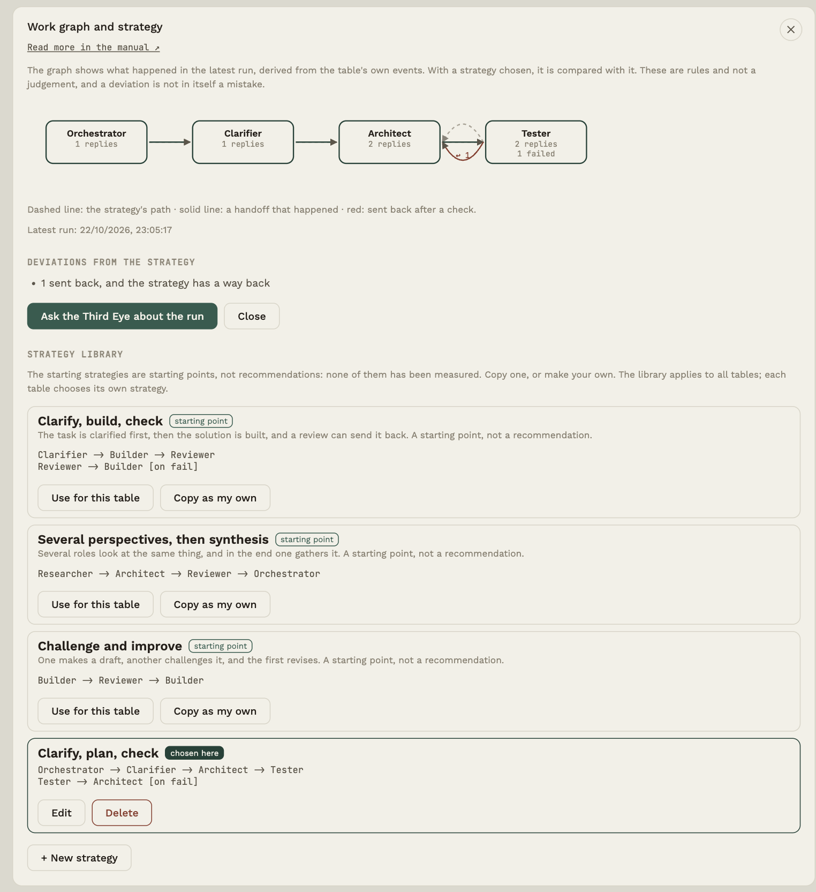
The graph is derived from the table's own events in the latest run, without model calls:
- every seat is a box with the number of replies and any checks that failed,
- a solid arrow is a handoff that happened (with a count, if more than one),
- a red arc is a sending back after a check,
- a dashed arrow is the strategy's own path.
A dashed box is a role from the strategy that was not part of the run or has no seat with that name. A box with an orange edge took part but is not in the strategy.
Deviations
With a strategy chosen, the run is compared by fixed rules: roles without a seat, seats that were not part of it, seats outside the strategy, a different order than the strategy's, handoffs the strategy does not have, sendings back (and whether the strategy has a way back), and seats that answered three times or more. These are rules and not a judgement, and a deviation is not in itself a mistake: it may be exactly what you wanted.
The strategy library
Below the graph is the library. There are three starting strategies (Clarify, build, check; Several perspectives, then synthesis; Challenge and improve). They are starting points and not recommendations: none of them has been measured. They can be copied but not changed. Make your own with + New strategy:
- write roles separated by
->, one path per line, - put an explanation in brackets at the end of a line, for example
[on fail], - a role matches a seat with exactly that name (upper and lower case do not matter),
- at most 12 roles and 30 paths. If the text is invalid, the app says which line is wrong.
The library applies to all tables. Each table chooses its own strategy, in the library (Use for this table) or under ⚙ → This table → Strategy (saved with Save).
The Third Eye
Only when a strategy is chosen, the Third Eye gets a short text in its context: the strategy's paths, what actually happened, replies per seat and the deviations, and the instruction to use the graph to point out deviations without inventing anything. Without a chosen strategy the Third Eye is unchanged. The button Ask the Third Eye about the run opens the conversation with a suggested question.
What is logged?
That a strategy was chosen, saved or deleted, and the number of roles and paths. Never the strategy's name or text.
IN and OUT
Put material in for the table, and get results out as files when you decide.
Every table has two folders on your computer:
- ↑ IN: material in. Notes, texts, data, drafts.
- ↓ OUT: results out, as files you can use elsewhere.
The folders live in Documents/Rundbordet/<project name>/IN and /OUT and are created the first time you use them. If you rename the project later, the folder stays where it is. Below the table two tiles show the number of files, and a click opens the IN and OUT panel.
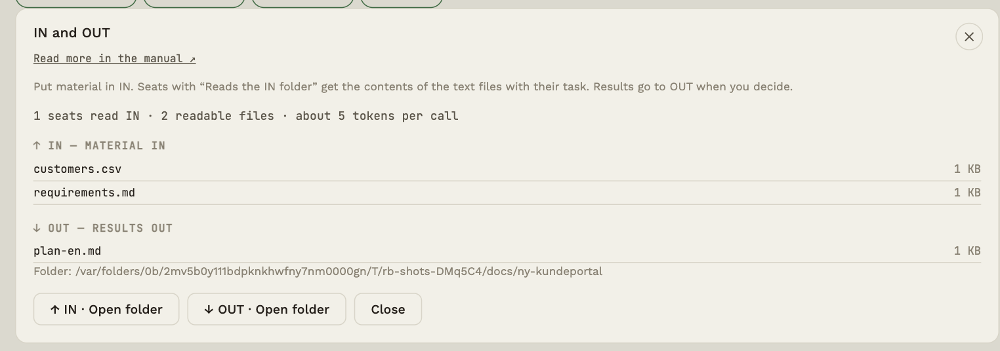
Put material in IN
- Drop files anywhere in the window (the IN tile lights up), or click Open folder and put them in with Finder/Explorer.
- Readable formats:
.txt.md.markdown.csv.tsv.jsonand.pdf. Other files can sit in IN but are not (yet) read by the seats. From a PDF only the text is taken (the first 60 pages); a scanned PDF without a text layer gives nothing, and the file is listed as "not included". Images and tables in a PDF are not seen. - Limits: at most 5 MB per file can be added to IN (PDF: 20 MB). When reading, at most about 60 KB per file and 150 KB in total are taken; longer text is truncated.
- An existing file is never overwritten; the new one gets " (2)" in its name.
Inbox: a folder the table only reads
Every table has its own IN and OUT. A table can also have an inbox: a folder somewhere on your computer, for example a project folder or a folder where new documents land. Choose it under ⚙ → This table → Inbox → Choose folder ….
- The table only reads. The app never changes, moves or deletes anything in the inbox. It only looks at the files in the folder itself (not subfolders, hidden files or shortcuts).
- New since last time. Under IN/OUT there is a tile ↙ INBOX with the number of new files. A file is new the first time you see it, and again if it is changed. The folder is checked when you open the table or come back to the app.
- The seats do not read from here. Open the tile and choose Fetch to IN for a file (or Fetch all new to IN), and it is copied to the table's IN. Then the same rules apply as for all other IN: only seats with Reads the IN folder get the file, and the content is data, not instructions. Mark all as seen resets the counter without copying anything.
- Limits: the same as for IN (5 MB per file, PDF 20 MB). A file that is too large cannot be fetched.
- What is logged? That the inbox was set or removed, and how many files and bytes were fetched, never file names or content.
- You cannot choose the table's own folder (IN/OUT), a root folder or the app's data folder.
Images in IN
Images (.png .jpg .jpeg .webp .gif) can be added to IN like any other file, but are handled differently from text: they are not sent as a text block, they are shown directly to the model — only to seats whose provider can actually see images (Anthropic, OpenAI, Google or a custom provider). Seats on Groq, Mistral, xAI or DeepSeek do not get the images, only the text material, regardless of "Reads the IN folder". In the panel an image is labelled image instead of greyed out as an unreadable file.
Limits: at most 4 images and 5 MB per image (15 MB in total) are sent per call; the rest are silently skipped. Like text, the images are fetched fresh on every call.
Set seats to read IN
Open a seat and tick Reads the IN folder. Every time the seat answers, it gets the contents of the text files — and any images, if its provider can see them — as material.
Get results out to OUT
Something only reaches OUT when you choose it. Two ways:
- The OUT Writer role (the Delivery group). Give it the turn, or forward an answer to it. It writes the result as plain file text, and the app saves it in OUT automatically and adds a note in the conversation: ↓ Saved to OUT: name with a link to the folder.
- The ↓ Save to OUT button on any answer in the full conversation.
Files in OUT are always .md, .txt, .csv or .json. The app never overwrites anything; if the name collides, " (2)" is added.
OUT Writer also gets the decision register and must address every item: settled questions with your answer, open ones in an Open questions section (see Take part along the way).
What is logged?
Only facts: that a file was put in IN, how much material was sent to a seat, and that something was saved to OUT. Never the contents of the files (see Metrics and handoff).
Sprint plan as a file and a CSV
If a seat (typically OUT Writer) ends its reply with the line <<SPRINT>> followed by a JSON block with goal, capacity and stories, the app makes two files in OUT instead of one:
- a readable plan (
.md) with the sprint goal, capacity, a table sorted by priority, acceptance criteria and risks. If the planned points exceed the capacity, it says so clearly, and - a CSV (
.csv) with the columns Title, Description, Priority, Story points, Acceptance criteria, Owner, which can be opened in a spreadsheet or imported into a planning tool. The file is UTF-8 with a BOM so that Excel shows æ, ø and å correctly; if an import tool misreads the first column, remove the BOM.
The app checks the plan: only the points 1, 2, 3, 5, 8 and 13 are accepted, duplicates and invalid items are skipped (you get a warning), and at most 30 stories. Text that could run as a formula in a spreadsheet (starting with =, +, - or @) gets an apostrophe in front. If the block cannot be read, the text is saved as it is, with a note. While Protection is on, the files get the real values back.
Metrics and handoff
See what the table has done and cost, and how answers are handed over between seats.
Metrics
Open ⚙ → This table and choose Metrics. The panel shows plain facts about the active table:
- Total number of calls, tokens, cost, average response time and failures, and which kinds of failure (for example
http_429for too many requests,http_401for an invalid key,timeout). - A table per seat and one per task.
- Handoffs: how many, how many fell back to full text, and how many characters were sent.
- Your actions: needs resolved, dials applied, suggestions flagged, variants chosen.
- Export log (JSON) saves it all to a file, in a place you choose.
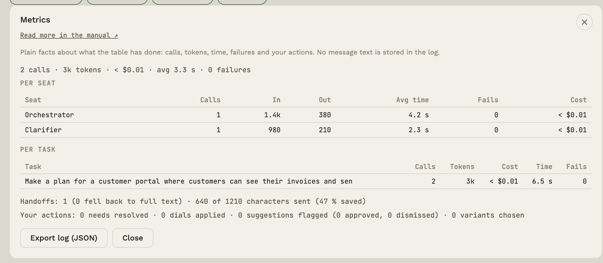
The log keeps the latest 2000 events per table.
Handoff between seats
When the table passes an answer on, it can do so in two ways. The default is full text. You can choose per table in the project panel (click the name in the middle of the table):
| Mode | What the next seat gets |
|---|---|
| Structured | The original task, a short summary and the seat's delivered facts, decisions, open questions, warnings and expected output |
| Full text (default) | The original task and the whole previous answer |
In structured mode the seats end their answers with up to five extra lines (📋 Facts · ✔ Decisions · ❓ Open questions · ⚠ Warnings · 📦 Expected output). If a seat cannot deliver them, the table automatically sends the whole answer, so nothing is lost. In the conversation a small line "📋 Handoff: …" appears under the answer.
Does it save money?
Short answer: no, not on short chains. Structured handoff passes fewer characters on, but the seats also write the extra lines, and output tokens cost more than input tokens. In a trial with three seats (36 runs) the characters passed on dropped by 38-59%, but the cost per run rose by about 30%, and quality did not change noticeably. The value lies in a clearer handoff, not in saving. The trial is small (see evals/RESULTS.md), and longer chains were not tested. Metrics shows the numbers for your table, so you can choose the mode that suits you best.
Events about your choices
When you take part along the way, the table only keeps that something happened, and numbers, never your text:
| Event | Means |
|---|---|
run.paused |
The table paused (reason: question, always or arrow; number of questions) |
edge.configured |
You changed an arrow: pause before the next seat and handoff type (only the choice) |
question.answered / question.skipped |
You answered, or deliberately left out (in the pause card or on the arrow) |
pause.commented |
You wrote a comment at a pause |
run.resumed |
The run went on after a pause (number answered and left out) |
run.closingcheck |
Closing check (number of open and settled questions) |
envelope.opened / envelope.sent / envelope.edited / envelope.cancelled |
The envelope was shown (number of characters), sent, edited (before and after), or cancelled |
preset.applied / tryout.run / tryout.chosen / tryout.decided |
You chose a preset (only which) and tried a dial with and without (only choices and counts: whether it worked, whether you preferred with, without or no difference, and whether you kept or turned it off). Never text |
update.checked / update.downloaded |
You checked for a new version (only the outcome: new, same, ahead, no access, no connection) and downloaded it (only whether it worked and whether the checksum matched) |
proposal.rewritten |
A model was asked to phrase a suggestion as an instruction (only whether it worked, no text) |
diff.opened / diff.analysed |
The disagreement view was opened (number of replies), and a model pointed at differences (number agreed, disagreed and unclear) |
reflection.scheduled |
You made a calendar file for a look-back (when, number of questions, whether the topic is included) |
reflection.scheduled |
You made a calendar file for a look-back (when, number of questions, whether the topic, open questions and decisions are included) |
owntake.written / owntake.skipped / owntake.compared |
Own take written (length), left out, or compared (your choice) |
They are in the exported log, and the Metrics panel shows them as numbers under Your participation, when there is something to show:
- Pauses: how many, how many at questions, "always" and at an arrow, and how many questions were shown.
- Questions for you: how many you answered, how many you deliberately left out (and what share that is), how many were settled on the arrow, and comments at pauses.
- Closing check: how many runs ended with open questions, and how many questions that was in total.
- Disagreements: how many comparisons you have made.
- Look-backs: how many calendar files you have made.
- Envelopes: how many were shown, sent (and how many of them you edited) and cancelled.
- Own take: written, left out and compared, and how many times your take stood, was adjusted or was switched.
The numbers say how much you take part, not whether it worked. A high share of deliberately skipped questions can mean the pauses are too many or the questions too small. It is a sign to look closer, not an answer.
Prices and usage
Keep an eye on what the calls cost.
Rundbordet uses your own API keys, so the bill goes straight to your provider. The app helps you follow it as you go.
Usage
The button with the amount at the top (for example $0.26) shows the total usage for the active table. Click it for an overview per seat: number of calls and tokens. The confirmation before a run also shows the usage so far.
The price table
Choose Prices under ⚙ → Whole app. The table has one price per model: dollars per million input tokens and per million output tokens. It is shared by all seats and tables.
- Add a model manually: model id and the two prices.
- Update automatically fetches current prices from llmpricing.dev for the models you know.
- Recompute pending prices gives a price to calls made before the model had one.
Keeping the bill down
- Set a cost limit per run in the project panel (see Start the table).
- Use small, cheap models for clarifying and checking, and a stronger one only for the hard part.
- Turn on Cost awareness (see Behaviour and icons) so answers stay short.
- Only let the seats that need the material read IN (see IN and OUT).
- See in Metrics which seat and which task use the most.
Save to git
Write an approved answer to a GitHub repo with one click.
If you have a GitHub repo for the project, you can save selected answers straight into it, as a file that is committed and pushed.
Setup
- Click the project name in the middle of the table to open Project.
- Paste the GitHub repo address, for example
https://github.com/organisation/repo. Create new repo ↗ opens GitHub. - Paste a personal access token with the
repopermission. Create token ↗ takes you there. The token is stored encrypted on your computer. - Click Save. At the top it now says GitHub ●.
Use
In the full conversation every answer gets a 💾 Save to git button. Click it when you have read the answer and want to keep it: the app writes the answer to a file and commits and pushes. The button briefly shows Saving … and then the commit code.
Leave the token field empty to turn the feature off.
Voice (ElevenLabs)
Let a seat read its replies aloud, with a real voice.
Rundbordet can read a seat's replies aloud via ElevenLabs, an external text-to-speech service. It requires your own ElevenLabs account and key — one key for the whole app, not one per table, the same way the price table is shared across all tables.
Setting it up
- Open ⚙ → Whole app and choose Voice.
- Paste your ElevenLabs API key (Get key ↗ takes you to ElevenLabs). Click Save.
- Click Fetch voices. The app fetches the list of voices on your account.
- Open a seat and pick a voice under Voice (ElevenLabs). Save the seat. (A voice for the Third Eye is chosen by itself; you can change it in the Voice panel.)
Seats without a chosen voice are not read aloud — that is still the default.
Using it
If a seat has a voice, its replies get a 🔊 Read aloud button in the full conversation. Click it: the button briefly shows Fetching audio …, then Playing …, and the audio plays inside the app. The voice says a short brief about the reply (see What the voice says below), not the whole text.
What the voice says
The voice does not read the whole reply aloud. Replies can be many lines of code or long texts, which are for reading, not for listening to. Instead the voice says a short brief: what has been sent, and why it is worth a look. For example "I have written some code for you. Have a look when you have a moment", "I have laid out some choices for you. Pick the one that fits best" or "I have sent you something to decide on."
For the Third Eye a separate audio message is made (see the Third Eye chapter). For the seats' replies the app picks the brief from the kind of reply: code, choices from the Third Eye, an assessment, a question to you, an open need, a long text or a list. The wording varies so it does not sound the same every time. Very short, plain replies (up to about 140 characters) are read as they are.
While the voice speaks, a small card appears at the bottom right with moving bars, who is speaking, and the text the voice says. Stop cuts it off at once.
For the seats' replies the brief is made locally in the app from the kind of reply, without an extra model call, and contains none of the reply's words (code, names, numbers). For the Third Eye a small, separate request to the same model writes an audio message of about 10 seconds at most, saying the status and what is required of you (see the Third Eye chapter). It contains words from the Third Eye's text and is sent to ElevenLabs, and only when Protection is off.
Hear the voices
Once you have fetched voices, each one has a ▶ Try button. It reads a fixed sample sentence aloud with exactly that voice, so you can hear the difference before choosing it for a seat or for the Third Eye. The sample is not your text, and it appears in the log of what was sent as a call to ElevenLabs. Each sample costs a little on your ElevenLabs account.
When a voice does not work
The error is written in plain language, both at the button and in the activity stream. The most common is that a voice has been disabled by its owner at ElevenLabs (this can happen with shared voices from the library). Then choose another: ⚙ → Whole app → Voice for the Third Eye, or in the seat's panel. Other causes the app knows: the voice does not exist, the character quota is used up, the key is invalid or lacks a permission, the plan may not use the voice, or too many calls at once. At the end come the HTTP code and ElevenLabs' own text.
Test the key
Under Voice you will find the Test the key button. It checks two things and reports the result in plain words: whether the key can fetch voices, and whether it may use speech-to-text (what talking to the Third Eye needs). The test also runs by itself right after you save a new key. The speech-to-text check sends a 0.3-second clip of silence, so it costs next to nothing.
When you type a new API key for a seat, it is tested right when you save, and the result appears as a system note in the conversation.
Talk to the Third Eye
- Click 🔎 Third Eye. If you have an ElevenLabs key, a voice for the Third Eye is chosen automatically the first time (you can change it under Voice for the Third Eye). Without a voice you can still speak, but there is no audio message.
- Click 🎤 in the dialogue, speak, and click again to stop (the recording stops by itself after 90 seconds).
- The audio is sent to ElevenLabs, which turns it into text. The text becomes your question to the Third Eye and appears in the dialogue.
- The Third Eye answers in text, and if there is a voice, it then says a short audio message.
The first time, the computer asks permission to use the microphone. If you clearly say "choose A", "B" or "C" while there are open choices from the Third Eye, the app first shows a confirmation with what it understood. Nothing is carried out until you say yes. Anything else you say is treated as a question.
Protection
Hide names, emails, national ID numbers and other sensitive details before anything is sent to a model.
When Protection is on, Rundbordet changes the text on your own computer before it leaves it: names, email addresses, national ID (CPR) numbers, phone numbers, addresses and IBANs are replaced by stable placeholders such as [PERSON_01] and [EMAIL_01]. The model only sees the placeholders. When the reply comes back, the app puts the real values back — only on your side.
Think of it as: original → protected text → model → locally restored reply.
How to turn it on
Click 🛡 Protection next to the message box (or open ⚙ → This table and choose Protection). The setting is per table. The panel shows a preview: what you type on the left, what the model would get on the right.
What is hidden
- Certain findings are hidden without asking: email, CPR number, phone number, address and IBAN.
- Your own words: names, companies, places or case numbers you add in the panel. Upper/lower case does not matter, and inflected forms (such as the genitive) are caught.
- Possible surnames (words ending in -sen, such as Hansen) are uncertain. Before sending, the app asks: tick the ones that are not names and they will be sent unchanged from now on. The rest are hidden and remembered as your own words.
The text that is checked is everything that would be sent: your message, the conversation history, memory, and text from files in IN (including PDFs).
Replies and files
Replies are shown with the real values dotted-underlined; hover to see the placeholder. To see a reply as the model saw it, tick Show replies as the model saw them. When a reply is saved to OUT, the file gets the real values back. A placeholder the app does not know, or that the model has altered, is left as it is — and you get a warning. The app never guesses.
If something goes wrong
- If anything unprotected would slip through, the app stops the sending instead of sending it.
- If the connection fails, nothing is resent automatically.
- The model's reply is treated as untrusted: it is only restored by looking up placeholders in your local list.
- The list of hidden values is never sent to a model and is stored encrypted on your computer. Forget hidden values deletes it.
Log of what was sent out
At the bottom of the Protection panel is a log of what has left the computer: to which model (or ElevenLabs, or GitHub), when, whether it was protected or in clear text, and how many details of which type were included. The values themselves are never in the log. The log is kept even when Protection is off — so you can see whether an email or a national ID number went out in clear text. The rules cannot read images; they are just counted. The whole log can be exported under Metrics.
Where is your data?
The panel also shows where your data can go on this table: the providers your seats use, ElevenLabs if you have a key, and GitHub if you set up a repo. The app sends nothing else anywhere and has no telemetry.
On the computer: API keys are always encrypted. While Protection is on, your messages, task texts, memory and hidden values are also encrypted in the configuration file. If you turn it off, messages are stored in clear text again. The backups (.bak) are the previously saved version and may therefore contain clear text from before. Files in IN and OUT are ordinary files in Documents and are not encrypted.
What it cannot do
- Images in IN are not sent while Protection is on, because text rules cannot read images.
- Read-aloud (voice) is disabled while Protection is on.
- Save to git saves the reply with placeholders.
- The rules are built for Danish data. Other languages and formats may slip through.
Language
Danish and English throughout the app.
Choose Language under ⚙ → Whole app: Dansk or English. The choice applies to:
- the whole interface and the app's menus,
- the fixed instructions sent to the seats (roles, dials, handoff),
- this manual, which opens in the chosen language.
If you switch language while the manual is open, it reloads in the new language.
Your own messages and the seats' answers are written by you and the models in whatever language you choose; the app's language does not restrict that.
Appearance: light or dark
Under ⚙ → Whole app → Appearance you choose Follow the system, Light or Dark. The choice applies to the whole app and the manual. On some Linux desktops (such as Hyprland) the app cannot tell whether the system is dark, and then this choice is the safe way: choose Dark yourself. Printing and the PDF of the manual are always light.
Settings
What applies to one table, kept apart from what applies to the whole app.
Open ⚙ at the top right. The panel has two tabs, and a band at the top of each tab says what it applies to:
| Tab | Applies to | Contains |
|---|---|---|
| This table | only the active table | project name, how the table is shown, who takes the next turn, handoff, cost limit, GitHub, the table's data (Memory, Protection, Metrics, Table file) and Delete the table |
| Whole app | all tables | appearance, language, API model profiles, Prices, Voice, User manual, Your tables, Your roles, version |
The panel remembers which tab you used last.
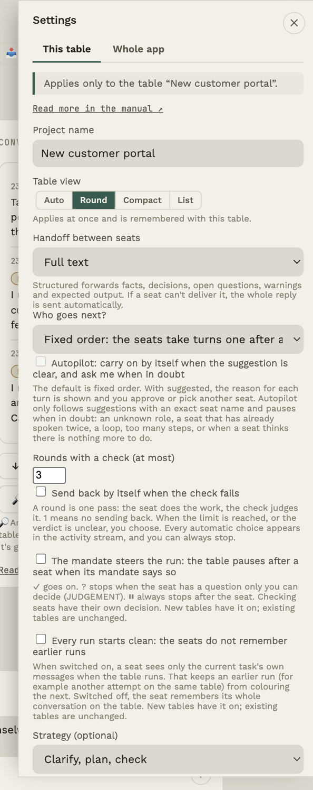 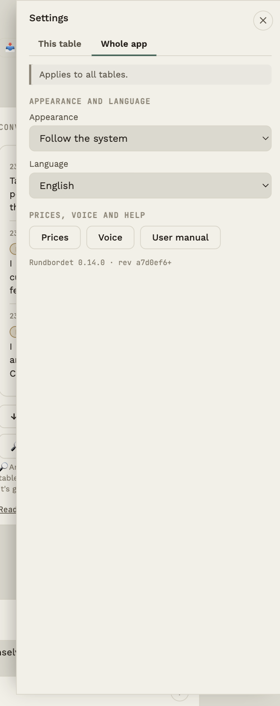
How a run proceeds: pauses and clean context
Under This table there are four choices that change how a run proceeds:
- The mandate steers the run: the table pauses after a seat when its mandate (✓ ? ⏸) says so. See Take part along the way. New tables have it on; existing tables are unchanged.
- See and edit the envelope: the table stops before each handoff and shows exactly the text the next seat gets, so you can edit it. See Take part along the way.
- Own take first: the start confirmation gets a field for your own take, which is shown next to the table's result afterwards. See Take part along the way.
- Every run starts clean: the seats do not remember earlier runs.
API model profiles: provider and key in one place
Under ⚙ → Whole app → API model profiles … you set up provider and key once. Each seat picks a profile in its panel (API model profile) and chooses its own model. The key is never written on the seat.
Default profile: the key is set in one place only. If you have an OpenRouter profile (Quick start and the welcome screen create it, and the Third eye can create it), it is used by every seat that has not chosen anything itself, by new seats and by the Third eye. So you do not set the key on each seat, and a new seat already has a model. Without an OpenRouter profile, the only profile with a key is used. You can always pick another profile on a seat.
If you change the profile, all seats follow. Change the key in one place, and it applies to every seat that uses the profile. If you leave the key field empty when editing, the old key is kept. The profile's default model is optional and is only used by a seat that has no model of its own.
If an API is missing, the table does not start. Before a run it checks that every seat has a profile with a key and a model. Otherwise the app says what is missing and takes you to the seat or the profiles. A banner above the message field shows it all the time, and nothing is sent to any model until you press Start yourself.
From the seat panel you can set up a profile without losing what you typed there; the new profile is chosen afterwards.
The key lives only in the profile, encrypted on your computer, and the seat is saved without a key on disk. It is only sent to the provider.
Older seats: if a seat had its own key, it is moved to a profile the first time this version starts (one per provider and key, for example OpenRouter), and the seat points at it. The seat's model is kept, and a backup of the setup is made first (
rundbordet-config.json.pre-v4.bakin the app's data folder).If you delete a profile, the seats that used it keep their setup (provider, model and key) and no longer point at a profile. The first click on Delete asks for confirmation and says how many seats are affected.
Table files save provider and model as before, never the key.
Your roles: concept and role name
A seat has a concept (what it is, for example Builder or OUT Writer) and an optional role name. The role name is right below the concept in the seat panel and is empty by default; if you type one, it is used instead of the concept everywhere on the table. The concept still works: a seat with the concept OUT Writer delivers to OUT, whatever it is called.
Under ⚙ → Whole app → Your roles you save your own roles (role name and concept) so you can choose them again on all seats and tables. They also appear as their own group, Your roles, in the role list and in the picker when you add a seat, and in the seat panel you can save the current role with Save role in the library.
Your tables: rename, duplicate, backup, restore and delete
Under ⚙ → Whole app → Your tables you see all your tables, with the number of seats, the number of messages and when each was last used. It is shown at every level.
- Save as a file saves one table as a readable file (JSON) in the place you choose. The file has the table's setup and conversation, as they are stored. It never contains API keys, tokens or addresses.
- Open backup … restores a backup file as a new table; your existing table is untouched. You first see what the file contains (seats, number of messages, remembered items and warnings), and nothing is created until you say yes. The conversation and memory come back, and the conversation with the Third Eye is still a conversation of its own. A backup has no keys, so the seats show API missing until you pick an API model profile. If a table already has that name, the new table gets the ending (restored). If Protection was on, the messages are saved with placeholders, which cannot be restored.
- Rename lets you correct the table's name right in the list. Enter saves, Escape cancels. The name cannot be empty or already in use.
- Duplicate makes a copy of the setup: seats, instructions, checks, rounds and API model profile. The copy has no conversation, no memory, no metrics and no GitHub access, and it becomes the open table. If the table is called My table, the copy is called My table (copy).
- Delete … removes a table for good, with its seats, conversation, metrics and memory. You must type the table's name to confirm, and Save a backup first is right there. Files in IN and OUT on disk are not touched. The last table cannot be deleted.
No levels: everything is there, and the rarer things sit in groups
Rundbordet no longer has the views Simple, More and Advanced. Everything is there all the time, and what you use less often sits in a collapsed group right where it belongs: click the group's heading to open it.
- Table settings: name, table view and cost limit are at the top. More options for runs (order, rounds, checks, strategy, clean context) and Save to GitHub are groups below. Memory, Protection, Measurements, Table file and export are buttons under Table data.
- App settings: theme and language are at the top; More appearance options holds the waiting layer and the Third eye icon. API model profiles, Price table and Voice are buttons.
- A seat: the name is at the top; Choose a concept, the seat's history and the dials are groups you can open.
- Third eye: the button sits by the conversation; Choose a model for the Third eye is in a small group and is set automatically by default.
Pauses, checks and questions always open by themselves when they occur.
The table's data: four panels as tabs
Memory, Protection, Measurements and Table file open as tabs in one place instead of four separate windows. You open them as before (⚙ → This table → The table's data), and the tab bar above the panel lets you switch between them with a click or the arrow keys. Only one is open at a time. Each panel works as before and is closed with its ✕ (Protection with its Close button, since a click outside does not close it).
How the table is shown
Auto, Round, Compact and List are chosen under This table and apply to that table only. One table can be a list while another is round. The choice takes effect at once and is saved with the table. What the four mean is in the chapter The table and the seats.
New table and Quick start
Next to the table selector at the top there is a +. It shows the choices directly: a task card, Get a suggestion for my task, Quick start (OpenRouter) or an empty table. Nothing is created until you have chosen and started.
Delete the table
At the bottom of This table is a red danger zone. Delete the table … requires you to type the table's name before the last button can be pressed. That prevents deleting the wrong table by accident. Deleting removes the table's seats, conversation, metrics and memory and cannot be undone. Files in IN and OUT on disk are not touched. The last table cannot be deleted.
Closing a panel
Every panel has a ✕ at the top right that is always visible, even when the panel scrolls. A click on an empty spot next to the panel closes it if you have not changed anything in it. If you have typed or chosen something, a click outside does not close it: the panel shows Not saved and shakes, and the click is not carried out until you have chosen Save or Cancel (or ✕, which cancels).
Save, or at once?
The table's text fields (name, GitHub, cost limit, who takes the next turn, handoff) are saved with Save. How the table is shown, appearance and language take effect at once.
Shortcuts
Quick ways around the app.
| Shortcut | What it does |
|---|---|
| F1 | Opens the manual |
| ⌘+Enter (Mac) · Ctrl+Enter (Windows) | Sends the message in the input field, also in the dialogue with the Third Eye |
| ⌘++ / ⌘+− / ⌘+0 | Zoom in / out / actual size (View menu) |
| ⌘+Q | Quits the app |
The manual can also be opened with the ? button at the top, with User manual under ⚙ → Whole app, in the Help menu, and with the "Read more in the manual" links in the panels.
Troubleshooting and FAQ
Solutions to the most common problems.
A seat does not answer
Click the seat and use Test API. Typical causes:
| Message | Solution |
|---|---|
| Invalid key / 401 / 403 | The key is wrong, expired, or has no access to the model. Paste a new one. |
| Out of credits / quota used up (HTTP 402, or 429 with insufficient_quota) | The account with the provider has no more credits. Top up or check usage with the provider; the message says where, when the place is known. The table does not retry, because it would not help. |
| Model not found / 404 | The model name is misspelled or retired. Use Fetch models. |
| 429 / 5xx / timeout | Temporary: during a run the table retries up to two times by itself. If that does not help, wait a bit or pick another model. |
| No connection | Check the internet; the provider may also have an outage. |
| "no saved API key" | The seat has no key. Open it and paste one. |
The message from the app says in plain language what went wrong and what you can do, and ends with the HTTP code and the provider's own text (and a request id, if the provider sends one), so you can use it if you write to the provider's support.
You can see failures and response times in Metrics.
None or only some of the seats answered
After a run, the status line only says what has happened. If not all seats answered, it says so (for example 1 of 2 seats did not reply), and the reason is a note in the conversation for each seat. Your question is put back in the message field, so you can fix the problem (a wrong key, a model that does not exist, a lost connection, a used-up price limit or an empty account with the provider) and press Send again. The confirmation shows what is sent and what it is expected to cost before anything goes out, so nothing is sent twice by mistake. If no seat answered, there is no result.
My setup could not be read
The setup is written to a temporary file first and then moved into place, so an interrupted write cannot destroy it. If the file still cannot be read when the program starts, it uses the previous saved version (so your latest change may be missing), or starts with an empty table if there is no backup, and says so with a message at the top. The message shows where the copy of the unreadable file is; nothing is deleted. Keep the copy until you have got help.
I'm stuck
If something does not make sense, or you do not know what to do now: press I'm stuck at the top. The table makes a short status message about where you were and what happened, so whoever you send it to can see what went wrong.
- You can read the whole message before you use it. You can add a sentence in your own words about what you were trying to do.
- None of your texts are in it: no messages, takes or tasks, no keys, no file names and no names of your seats. Only the version, which panels were open, which buttons you pressed (their ids only), fixed events and numbers.
- Nothing is sent by itself. You copy the message or save it as a file and send it wherever you like.
- The steps are kept only while the app is open, and only on your computer.
Install on Linux (e.g. Omarchy)
The Linux edition is a beta. It has been tried on Omarchy (Arch with Hyprland) and works there, and it is tested in an Arch container. That is not proof for other Linux distributions, and only the x64 processor is included. Tell us if something does not work.
From a package (.tar.xz):
- Check the file with
sha256sum Rundbordet-<version>-x64.tar.xzand compare with the checksum you received with the file. - Unpack and install:
tar xf Rundbordet-<version>-x64.tar.xz
sudo mv Rundbordet-<version>-x64 /opt/rundbordet
sudo ln -s /opt/rundbordet/rundbordet /usr/local/bin/rundbordet
sudo cp -r /opt/rundbordet/share/icons/hicolor /usr/share/icons/
sudo cp /opt/rundbordet/share/rundbordet.desktop /usr/share/applications/
- Start
rundbordet. For the keys you need a keyring, see Linux: keyring.
If the app complains about the "SUID sandbox helper", you can start it with rundbordet --no-sandbox as a workaround.
From source (needs git, Node and npm, and access to the repository): git clone, then npm ci and npm start in the folder.
The window is named rundbordet, so a Hyprland rule such as windowrule = float, class:^(rundbordet)$ can find it.
Linux (e.g. Omarchy): keyring
On Linux the app stores API keys in the system keyring (Secret Service, e.g. gnome-keyring). If there is none, the app shows a red warning under ⚙ → Whole app and in the Protection panel, and the keys are not properly protected. Install and start a keyring, then start the app again.
Be aware that some setups log in automatically and use a keyring without a password (Omarchy does this by default). Then the keys effectively sit in clear text in your home folder, and what protects them is the disk encryption. Turn it on if it is not.
Questions
I cannot hear the Third Eye. The audio message needs an ElevenLabs key (⚙ → Whole app → Voice), a chosen voice for the Third Eye, and Protection switched off. If something is missing, it says so under the dialogue, with a button to choose a voice; if playback goes wrong (for example a usage limit at ElevenLabs), the error is shown there too. Use Test the key and ▶ Try under Voice to see whether key and voice work.
Where is my data stored? Locally on your computer, in the app's data folder: on Mac ~/Library/Application Support/rundbordet-app/, on Windows %APPDATA%\rundbordet-app\. The file is called rundbordet-config.json. Your IN/OUT files are in Documents/Rundbordet/.
Are my API keys safe? They are encrypted with the operating system's keychain (macOS Keychain, Windows DPAPI) and sent only directly to the provider the key belongs to. The first time, the Mac may ask whether the app may use the keychain; answer Allow.
Can I take my data to another computer? Copy rundbordet-config.json. The keys are encrypted to the individual computer and must be entered again. You can also export the metrics as JSON (see Metrics).
What happens when I update? Install the new version over the old one; your tables are kept. Before a change to the data format, the app makes a backup (.pre-vN.bak) next to the file. The backups can contain old, unencrypted keys from earlier versions; delete them when you are comfortable.
The Mac says the app cannot be opened because the developer cannot be verified. Version 0.x is not yet signed with Apple. On macOS 15 and later: press Done, open System Settings → Privacy & Security, scroll down to Security, press Open Anyway next to Rundbordet, and confirm with your password or Touch ID. On older macOS you can instead right-click the app, choose Open and confirm. You only need to do this the first time.
The screen is blank at startup. Close the app and open it again. If a keychain dialog is hiding behind other windows, find it and answer it. If it persists, note the version and revision from ⚙ → Whole app when you get in touch.
The configuration file cannot be read. The app leaves it untouched next to the original as rundbordet-config.json.unreadable-… and starts fresh, so nothing is overwritten.
Can I use local models? Yes, if they offer an OpenAI-compatible API: choose Other (OpenAI-compatible) and enter the base URL.
The table stopped in the middle of a run. The status line says why. It can be a pause (the mandate ? or ⏸; the pause card is at the table), a checking seat that failed, the cost limit, or that you pressed Stop.
The table is waiting for an envelope. If See and edit the envelope is switched on under ⚙ → This table, the table stops before every handoff. Press Send the envelope (or Stop the run). If you do not want that, switch the setting off.
There is no pause although a seat has ?. Check that The mandate steers the run is switched on under ⚙ → This table (existing tables have it off), that the seat's question begins with JUDGEMENT: (or does not point to a seat), and that it is not the last seat. After the last seat there is no pause. See Take part along the way.
What does the mark on the arrow mean? A yellow number is open questions for you, red means the table is waiting for you in the pause card, and a green ✓ means the question is settled. Press the arrow to answer.
I do not see the comparison with my own take. It is only shown when Own take first is switched on, you wrote a take (an empty field is a deliberate skip), and the run was completed (not stopped).
Why do the seats not see my own take? On purpose: so the table's result is an independent take you can compare with. If you want a seat to use it, write it in the task or in an answer in the pause card.
Glossary
The words the app uses.
| Word | Meaning |
|---|---|
| Table | A project: a set of seats, a conversation and settings. You can have several tables. |
| Seat | A place at the table with a role, a model and an API key. |
| Role | The seat's name and starting point, for example Clarifier. |
| Turn / crown | Marker for which seat is up. |
| Run | The table goes around all seats on one task. |
| Task | What you write to the table; sent unchanged with each seat's call. |
| Dial | One of ten behaviour settings with a state and strength 1-10. |
| Icon | Mandate, way of working or information; shown on the seat and counted in the instruction. |
| System instruction | The full text a seat is sent before your message. |
| Need | A seat's suggestion for what is missing, who could solve it and what could be adjusted (🔭👉🎚). |
| Suggestion | A flagged message that can become a permanent addition to a seat's instruction once you approve it. |
| Handoff | What a seat hands to the next: facts, decisions, open questions, warnings, expected output. |
| Task anchor | The original task, which travels with every step so it does not get lost. |
| View | The table can be shown round, compact or as a list. Auto chooses by width. |
| Status word | What a seat says about itself: Working, Has the turn, Next in line, Done, Check failed, Needs you and so on. Only what the app can document. |
| Audio message | A short message (about 10 seconds at most) the Third Eye says about the status and what is required of you. |
| Voice | A voice from ElevenLabs, assigned to a seat, so its replies can be read aloud. |
| Checking seat | A seat that assesses the previous work and gives a verdict: passed or failed. |
| Send-back | The work is returned to an earlier seat after a check that failed: by you, or by itself if you have switched on rounds. |
| Round | One pass of work and check. On a fail the table can send back, up to a limit. |
| Memory | Items you want the table to remember; put into every seat's instruction. |
| Observation | A finding from rules on the event log, with evidence; costs no model calls. |
| Third eye | An independent assessment of the process at the table. |
| Variant | One of several parallel answers with a different dial setting. |
| IN / OUT | Folders for material in and results out. |
| OUT Writer | A role that writes the result as a file in OUT. |
| Token | The unit of text AI providers measure; prices are per million tokens. |
| Revision | The short code for the exact program version, shown next to the version number. |
| Protection | Hides sensitive details locally before text is sent to a model, and restores them in the reply. |
| Placeholder | A stable stand-in such as [PERSON_01] that the model sees instead of the real value. |
| Mandate | Icon on the seat: ✓ go on, ? stop at a question for you, ⏸ always stop after the seat. Steers the run when The mandate steers the run is switched on. |
| Pause / pause card | The table pauses after a seat and shows you its question, with a field for your answer. |
| Question for you | A need that begins with JUDGEMENT: or does not point to a seat, so only you can decide it. A need that begins with FACT: can be answered by a seat or a file. |
| Arrow | The connection between two seats. Shows the handoff and has a mark when there are open questions. |
| Decision register | Your decisions and the open questions in a task. Goes along in every handoff. |
| Closing check | After a run: the number and list of open questions (rules, no model). |
| Arrow setting | Pause before the next seat and handoff type for a particular arrow. Found in the arrow panel. |
| API model profile | Provider, model and key set up in one place. A seat can point at a profile, and if the profile changes, the seat follows. |
| Disagreement | A point where two replies say different things. You can let a model point at them and take a position yourself. |
| Look-back | A calendar file (.ics) with reflection questions that reminds you to look back at a decision. The app sends nothing. |
| Envelope | The text the next seat gets: the task, the previous reply, the decision register and your notes. Can be seen and edited before it is sent. |
| Own take | Your own answer, written before the table runs and shown next to the result. The seats do not see it. |
| Template | A ready-made table (roles, mandates, instructions) with a tag for how much you take part. |
About Rundbordet
Version, privacy and changes.
Version
This manual belongs to Rundbordet 0.42.0 (revision c852136). The version is also shown at the bottom of ⚙ → Whole app and in About Rundbordet.
Version numbers take the form MAJOR.MINOR.PATCH: a new patch fixes bugs, a new minor version adds features, and a new major version may change how the app is used. The revision points to the exact code the version was built from.
Privacy
- Your tables, messages and settings are stored only on your computer.
- API keys are encrypted with the operating system's keychain and sent only to the provider they belong to.
- The app sends no metrics or usage data to us. Metrics in the app is a local log that only you can export.
- Your messages and material are sent to the AI providers you have set on the seats, and are subject to their terms.
Changes
The list of changes is kept in Danish:
Format følger Keep a Changelog, versioner følger SemVer.
[Ikke udgivet]
[0.42.0] – 2026-11-09
Ændret
- Ingen visningsniveauer mere: alt er med, og det sjældne ligger i grupper. Vælgeren Visning (Enkel, Mere, Avanceret) er fjernet, og intet skjules længere. I stedet ligger det, du sjældnere bruger, i en sammenfoldet gruppe lige dér, hvor det hører hjemme: Flere valg til kørslen (rækkefølge, runder, kontrol, strategi, ren kontekst) og Gem i GitHub under bordets indstillinger, Flere valg til udseendet (ventelag, Tredje øje-ikon) under programmets, Vælg et begreb på en stol, Færdige begreber når du tilføjer en stol og Vælg model til Tredje øje ved Tredje øje. Værktøjerne (Tilbageblik, Uenigheder, Hukommelse, Målinger, Bordfil, Pristabel, Stemme, varianter) er altid med. En ny stol er stadig bare et navn og eventuelt Skriver til OUT. Startguiden spørger kun om, hvor vigtigt svaret er (spørgsmålene om erfaring og lyst til at styre er væk, og den foreslår ikke længere en visning). Hændelsen
ui.leveloglib/uilevel.jser fjernet; et gammeltuiLeveli en opsætning ignoreres. - Nøglen sættes ét sted, og alle stole bruger den. Velkomsten og Hurtig start gemmer din OpenRouter-nøgle som en standardprofil med en billig standardmodel (fra OpenRouters startforslag) i stedet for at skrive nøglen på hver stol. Stole uden egen nøgle og uden valgt profil peger automatisk på standardprofilen (OpenRouter, ellers den eneste profil med en nøgle), også nye stole og stole fra ældre borde. Det nye stolepanel har standardprofilen og dens model valgt på forhånd, så en ny stol kan gemmes uden at sætte API op. Rører ikke en stol med egen nøgle, en lokal model (Anden adresse) eller en anden udbyders model.
- Tredje øje beder selv om nøglen, hvor den skal bruges. Mangler Tredje øje en nøgle, står der et felt øverst i Tredje øje: indsæt din OpenRouter-nøgle og tryk Gem og tjek nøglen. Den tjekkes mod OpenRouter (intet sendes), gemmes som standardprofil, og så virker både Tredje øje og alle stole. Nøgletrinnet i velkomsten siger nu, at den samme nøgle bruges af alle stole og af Tredje øje.
[0.41.0] – 2026-11-09
Ændret
- Rettet: feltet til Tredje øje i samtalen manglede sin tekst til skærmlæsere (nøglen
talkInputLabelfandtes ikke). En ny test sikrer, at alle tekster findes på både dansk og engelsk, og at ingen tekstnøgle defineres to gange. - Download-siden og manualen passer til forretningsmodellen og til det, der er afprøvet. Siden (genereret af
scripts/build-web.js) beskriver nu hver for sig: gratis brug (også uden licens), egen API-nøgle og egne udgifter, opdateringslicens (engangsbetalt; adgang til opdateringsfunktionen i appen) og betalte introduktionsforløb, uden opfundne priser, betalingslink eller vilkår. Linux nævnes som afprøvet på Omarchy (x64), ikke som dokumentation for andre distributioner. Teksten «licens og pris er ikke besluttet» er fjernet. - Forslaget i startguiden forklarer sig med almindelige ord: Sådan går det (bordtypens egen beskrivelse), hvor mange stole der kaldes og hvad du får ud af det, ud over begrundelsen og om forslaget bygger på faste regler eller en models vurdering.
- Ærlig status efter en fejl. Efter en kørsel stod der «Færdig — alle stole har svaret», selv når nogle stole ikke svarede. Nu siger statuslinjen, hvor mange der ikke svarede (eller at ingen gjorde, og der intet resultat er), og dit spørgsmål lægges tilbage i beskedfeltet, så du kan prøve igen uden at skrive det om. Resultatkortet vises kun, når der er et svar.
- Pris og nøgle forklares, og bekræftelsen før start viser et skøn. Under nøglefelterne står, at et ChatGPT- eller Claude-abonnement ikke i sig selv giver en API-nøgle, at du betaler udbyderen direkte, hvor nøglen gemmes, og hvem der modtager opgaven; nøgletjekket sender ingen opgave. Bekræftelsen før start viser et skønnet forbrug ud fra stolenes seneste kald (eller siger, at det ikke kan skønnes, og nævner modeller uden listepris), hvilken udbyder der modtager opgaven, og prisgrænsens faktiske begrænsninger (listepris, tjekkes mellem stolene, et kald kan gå over). Der er ingen påstande om, at API er billigere end et abonnement.
- Første skærm spørger «Hvad vil du gerne have hjælp til?». Øverst et felt, hvor du beskriver din opgave eller indsætter en tekst, og knappen Få et forslag til min opgave; teksten følger med ind i startguiden. Under det de fire eksempler og den indspillede demo. Der er færre knapper (kun hurtig start og tomt bord som de små veje), og introen siger, at du ikke skal vælge modeller, roller eller indstillinger først.
- Tydeligere navne på pause og mandat. Pilens pause hedder nu Stop her: du læser, før næste stol starter (altid). Mandatet hedder ✓ Fortsætter selv, uden at spørge dig, ? Spørger dig, når den er i tvivl og ⏸ Stopper altid efter sig selv: du læser resultatet, og teksterne siger, at mandatet ⏸ og pilens pause giver det samme stop. Hjælpen forklarer forskellen.
- Ny stol uden rolleknapper på Enkel og Mere. Panelet viser kun + Ny stol og en afkrydsning Skriver til OUT (stolen gemmer sit svar som en fil i OUT). Rolleknapperne er kun under Avanceret.
- Pilene viser kun den planlagte rækkefølge. En overdragelse, der gik et andet sted hen end rækkefølgen siger, tegnes som en mærket genvej (prik-streg-linje med navnene som tip), så en stol ikke ser ud til at have flere planlagte pile. En lille forklaring nederst til venstre på bordet viser, hvad linjerne betyder.
- «+» ved bordvælgeren åbner valgene direkte (opgavekort, Jeg har en anden opgave …, Hurtig start og tomt bord) i stedet for en rullemenu. Der oprettes intet bord, før du selv har valgt og startet.
Copyright
© 2026 eterapeut.dk. See LICENSE and THIRD-PARTY-NOTICES.md for the licence and third-party components (including the fonts Fraunces, Work Sans and JetBrains Mono, which are bundled under the SIL Open Font License).